United States
175 restaurants · 1214 photos
No NZ/AU plan The Juicy SeafoodNew Orleans LA, Sandy Springs GA · 8NZ/AU ?
The Juicy SeafoodNew Orleans LA, Sandy Springs GA · 8NZ/AU ? Crawfish IslandFederal Way WA, Sand Point, Alaska · 6NZ/AU ?Sammy Crawfish KingBaton Rouge LA · 6NZ/AU ?Mr. & Mrs. Crab Juicy Seafood & BarCelebration, Florida · 6NZ/AU ?Boil DaddyCimarron Hills, Colorado · 6NZ/AU ?Crazy CrabFairfax, Virginia · 6NZ/AU ?
Crawfish IslandFederal Way WA, Sand Point, Alaska · 6NZ/AU ?Sammy Crawfish KingBaton Rouge LA · 6NZ/AU ?Mr. & Mrs. Crab Juicy Seafood & BarCelebration, Florida · 6NZ/AU ?Boil DaddyCimarron Hills, Colorado · 6NZ/AU ?Crazy CrabFairfax, Virginia · 6NZ/AU ? Bag O' CrabEsperance, Washington · 6NZ/AU ?Juicy SeafoodLayhill, Maryland · 6NZ/AU ?Yummy CrabCharlotte, North Carolina · 6NZ/AU ?
Bag O' CrabEsperance, Washington · 6NZ/AU ?Juicy SeafoodLayhill, Maryland · 6NZ/AU ?Yummy CrabCharlotte, North Carolina · 6NZ/AU ? King ClawNorth Charleston, South Carolina · 6NZ/AU ?Fiery Crab Seafood Restaurant And BarVillage Saint George, Louisiana · 6NZ/AU ?Cajun CornerOklahoma City, Oklahoma · 6NZ/AU ?Crab N SpiceSpring Valley, Nevada · 6NZ/AU ?LA CrawfishHelotes, Texas · 6NZ/AU ?The Twisted CrabSugar Hill, Georgia · 6NZ/AU ?The Tangy CrabWaverly, Michigan · 6NZ/AU ?Lee's Seafood BoilWorthington, Ohio · 6NZ/AU ?Red Hook Cajun Seafood & BarLakeland, Tennessee · 6NZ/AU ?Cajun CrackinNellis Air Force Base, Nevada · 6NZ/AU ?Smashin CrabLeon Valley, Texas · 6NZ/AU ?LA Crab ShackTempe, Arizona · 6NZ/AU ?La Juicy SeafoodHendron, Kentucky · 6NZ/AU ?Hot N Cajun Boil HouseNew Orleans, Louisiana · 6NZ/AU ?Juicy Seafood & BarDuncanville, Texas · 6NZ/AU ?Crackin' CrabParadise Hills, New Mexico · 6NZ/AU ?Krazy Cajun Seafood & HibachiPhoenix, Arizona · 6NZ/AU ?Aloha Krab Cajun Seafood & BarMcKownville, New York · 6NZ/AU ?HAPPY CRABSeattle, Washington · 6NZ/AU ?Juicy King Crab ExpressEast New York, New York · 6NZ/AU ?Mr. Crabby's Cajun Seafood & BarHollywood Park, Texas · 6NZ/AU ?Cajun Crab Juicy Seafood & BarJacksonville, Florida · 6NZ/AU ?Crab Shack RestaurantGandy, Florida · 6NZ/AU ?King Cajun CrawfishOrlando, Florida · 6NZ/AU ?Juicy Seafood ClevelandOrange, Ohio · 6NZ/AU ?Bucket O' CrawfishTaylorsville, Utah · 6NZ/AU ?The Crab BarrackCenter Point, Alabama · 6NZ/AU ?Crawfish HouseWhite Center, Washington · 6NZ/AU ?Oceanic BoilLong Island City, New York · 6NZ/AU ?Firehouse CrawfishFlorin, California · 6NZ/AU ?Juicy TailsCave Springs, Arkansas · 6NZ/AU ?The Monster Crab AYCE Seafood & BarEast Atlantic Beach, New York · 6NZ/AU ?Crab PubLemon Grove, California · 6NZ/AU ?Ocean CrabChantilly, Virginia · 6NZ/AU ?The King Crab ShackWest Milwaukee, Wisconsin · 6NZ/AU ?Cajun Claws Seafood Boil HouseOakland, California · 6NZ/AU ?Seafood BoilMilltown, New Jersey · 6NZ/AU ?Outer Banks Boil CompanyKitty Hawk, North Carolina · 6NZ/AU ?The Crawfish HutBurien, Washington · 6NZ/AU ?Oh My CrabLincolnwood, Illinois · 6NZ/AU ?Cajun Seafood & WingsOrangeburg, South Carolina · 6NZ/AU ?The Fire CrabWestminster, California · 6NZ/AU ?Ruby's Cajun Seafood BoilhouseWyndmoor, Pennsylvania · 6NZ/AU ?The Dancing CrabForest City, Florida · 6NZ/AU ?Aqua BoilManhattan, New York · 6NZ/AU ?Tejun The Texas CajunRobinson, Texas · 6NZ/AU ?Crawfish Asian CuisineReno, Nevada · 6NZ/AU ?Boulet's Boil-N-GoSulphur, Louisiana · 6NZ/AU ?Red Tails Boil HouseMoss Bluff, Louisiana · 6NZ/AU ?King Claw Juicy Seafood & BarAlbany, Georgia · 6NZ/AU ?
King ClawNorth Charleston, South Carolina · 6NZ/AU ?Fiery Crab Seafood Restaurant And BarVillage Saint George, Louisiana · 6NZ/AU ?Cajun CornerOklahoma City, Oklahoma · 6NZ/AU ?Crab N SpiceSpring Valley, Nevada · 6NZ/AU ?LA CrawfishHelotes, Texas · 6NZ/AU ?The Twisted CrabSugar Hill, Georgia · 6NZ/AU ?The Tangy CrabWaverly, Michigan · 6NZ/AU ?Lee's Seafood BoilWorthington, Ohio · 6NZ/AU ?Red Hook Cajun Seafood & BarLakeland, Tennessee · 6NZ/AU ?Cajun CrackinNellis Air Force Base, Nevada · 6NZ/AU ?Smashin CrabLeon Valley, Texas · 6NZ/AU ?LA Crab ShackTempe, Arizona · 6NZ/AU ?La Juicy SeafoodHendron, Kentucky · 6NZ/AU ?Hot N Cajun Boil HouseNew Orleans, Louisiana · 6NZ/AU ?Juicy Seafood & BarDuncanville, Texas · 6NZ/AU ?Crackin' CrabParadise Hills, New Mexico · 6NZ/AU ?Krazy Cajun Seafood & HibachiPhoenix, Arizona · 6NZ/AU ?Aloha Krab Cajun Seafood & BarMcKownville, New York · 6NZ/AU ?HAPPY CRABSeattle, Washington · 6NZ/AU ?Juicy King Crab ExpressEast New York, New York · 6NZ/AU ?Mr. Crabby's Cajun Seafood & BarHollywood Park, Texas · 6NZ/AU ?Cajun Crab Juicy Seafood & BarJacksonville, Florida · 6NZ/AU ?Crab Shack RestaurantGandy, Florida · 6NZ/AU ?King Cajun CrawfishOrlando, Florida · 6NZ/AU ?Juicy Seafood ClevelandOrange, Ohio · 6NZ/AU ?Bucket O' CrawfishTaylorsville, Utah · 6NZ/AU ?The Crab BarrackCenter Point, Alabama · 6NZ/AU ?Crawfish HouseWhite Center, Washington · 6NZ/AU ?Oceanic BoilLong Island City, New York · 6NZ/AU ?Firehouse CrawfishFlorin, California · 6NZ/AU ?Juicy TailsCave Springs, Arkansas · 6NZ/AU ?The Monster Crab AYCE Seafood & BarEast Atlantic Beach, New York · 6NZ/AU ?Crab PubLemon Grove, California · 6NZ/AU ?Ocean CrabChantilly, Virginia · 6NZ/AU ?The King Crab ShackWest Milwaukee, Wisconsin · 6NZ/AU ?Cajun Claws Seafood Boil HouseOakland, California · 6NZ/AU ?Seafood BoilMilltown, New Jersey · 6NZ/AU ?Outer Banks Boil CompanyKitty Hawk, North Carolina · 6NZ/AU ?The Crawfish HutBurien, Washington · 6NZ/AU ?Oh My CrabLincolnwood, Illinois · 6NZ/AU ?Cajun Seafood & WingsOrangeburg, South Carolina · 6NZ/AU ?The Fire CrabWestminster, California · 6NZ/AU ?Ruby's Cajun Seafood BoilhouseWyndmoor, Pennsylvania · 6NZ/AU ?The Dancing CrabForest City, Florida · 6NZ/AU ?Aqua BoilManhattan, New York · 6NZ/AU ?Tejun The Texas CajunRobinson, Texas · 6NZ/AU ?Crawfish Asian CuisineReno, Nevada · 6NZ/AU ?Boulet's Boil-N-GoSulphur, Louisiana · 6NZ/AU ?Red Tails Boil HouseMoss Bluff, Louisiana · 6NZ/AU ?King Claw Juicy Seafood & BarAlbany, Georgia · 6NZ/AU ? Cajun SeafoodNew Orleans LA · 5NZ/AU ?The Crawfish SpotLafayette LA · 5No NZ/AU planKrab KingzCypress TX · 5NZ/AU ?Yummi CrabMission Hills, Kansas · 5NZ/AU ?The Crab StationRichardson, Texas · 5NZ/AU ?A Plus CrabPontiac, Michigan · 5NZ/AU ?Cape Fear Boil CompanyLong Beach, North Carolina · 5NZ/AU ?192 Crab & Lobster Juicy SeafoodCelebration, Florida · 5NZ/AU ?The Boiling House Seafood BoilGreentree, New Jersey · 5NZ/AU ?King Wok Seafood BoilDearborn, Michigan · 5NZ/AU ?LarryP's Boiling PotBossier City, Louisiana · 5NZ/AU ?El Rayo Seafood BoilTucson, Arizona · 5NZ/AU ?100 Boil Pot & GrillCatalina Foothills, Arizona · 5NZ/AU ?Boiling Pot Seafood And BarBellview, Florida · 5NZ/AU ?The Boiling Pot (Fulton)Fulton, Texas · 5NZ/AU ?J&C Crab Juicy SeafoodFort Myers, Florida · 5NZ/AU ?Viet Cajun GalvestonGalveston, Texas · 5NZ/AU ?Boil CityBeaumont, Texas · 5NZ/AU ?Krunchy KrabLakeland, Florida · 5NZ/AU ?Buckets Crawfish and SeafoodPineville, Louisiana · 5NZ/AU ?Crawfish CafeHouston TX · 4NZ/AU ?The Mighty CrabBenton, Arkansas · 4NZ/AU ?Laughing CrabClive, Iowa · 4NZ/AU ?Cajun Boil & BarOakbrook Terrace, Illinois · 4NZ/AU ?Tasty Crab Seafood RestaurantLaurel, Virginia · 4NZ/AU ?Submarine CrabSan Diego, California · 4NZ/AU ?Pier 88 Boiling Seafood & BarRedstone Arsenal, Alabama · 4NZ/AU ?Surfing CrabBalcones Heights, Texas · 4NZ/AU ?Mr. Crab Seafood & BarFairfield, Connecticut · 4NZ/AU ?Lil Animals CrawfishBossier City, Louisiana · 4NZ/AU ?Cravin' CrawfishTacoma, Washington · 4NZ/AU ?Dirty Cajun Seafood KitchenBedford, Texas · 4NZ/AU ?Dockside Boiling PotVictoria, Texas · 4NZ/AU ?Crawdaddy's Boil-N-GoWhitehouse, Texas · 4NZ/AU ?Captain Crab Seafood RestaurantArden-Arcade, California · 3NZ/AU ?Crawfish ChefEast Hill-Meridian, Washington · 3NZ/AU ?Cajun King / Lucky ChowJackson, Tennessee · 3NZ/AU ?Rocking CrabBellair-Meadowbrook Terrace, Florida · 3NZ/AU ?Rockin CrawfishOakland, California · 3NZ/AU ?Cajun King SeafoodSouthaven, Mississippi · 3NZ/AU ?Hot & Spicy Cajun Seafood & BarWolfforth, Texas · 3NZ/AU ?Crawfish TymeBossier City, Louisiana · 3NZ/AU ?Crawfish BarnPearl, Mississippi · 3NZ/AU ?Boil ShackOttawa Hills, Ohio · 3NZ/AU ?The Boilin' BayouKilleen, Texas · 3NZ/AU ?Boiling DragonFresno, Texas · 3NZ/AU ?Hot Tails Crawfish & SeafoodTexarkana, Arkansas · 3NZ/AU ?Rockin Crab Seafood Boil & TakeoutSummerlin South, Nevada · 2NZ/AU ?Louisiana Crab ShackAustin, Texas · 2NZ/AU ?Crab and Boil SeafoodMontrose, Virginia · 2NZ/AU ?Louis Cajun SeafoodNewport, Kentucky · 2NZ/AU ?Crazy Cajun BeaumontBeaumont, Texas · 2NZ/AU ?The Bucket Crab & CrawfishOntario, California · 2NZ/AU ?Red Pier Cajun Seafood & BarGermantown, Tennessee · 1NZ/AU ?
Cajun SeafoodNew Orleans LA · 5NZ/AU ?The Crawfish SpotLafayette LA · 5No NZ/AU planKrab KingzCypress TX · 5NZ/AU ?Yummi CrabMission Hills, Kansas · 5NZ/AU ?The Crab StationRichardson, Texas · 5NZ/AU ?A Plus CrabPontiac, Michigan · 5NZ/AU ?Cape Fear Boil CompanyLong Beach, North Carolina · 5NZ/AU ?192 Crab & Lobster Juicy SeafoodCelebration, Florida · 5NZ/AU ?The Boiling House Seafood BoilGreentree, New Jersey · 5NZ/AU ?King Wok Seafood BoilDearborn, Michigan · 5NZ/AU ?LarryP's Boiling PotBossier City, Louisiana · 5NZ/AU ?El Rayo Seafood BoilTucson, Arizona · 5NZ/AU ?100 Boil Pot & GrillCatalina Foothills, Arizona · 5NZ/AU ?Boiling Pot Seafood And BarBellview, Florida · 5NZ/AU ?The Boiling Pot (Fulton)Fulton, Texas · 5NZ/AU ?J&C Crab Juicy SeafoodFort Myers, Florida · 5NZ/AU ?Viet Cajun GalvestonGalveston, Texas · 5NZ/AU ?Boil CityBeaumont, Texas · 5NZ/AU ?Krunchy KrabLakeland, Florida · 5NZ/AU ?Buckets Crawfish and SeafoodPineville, Louisiana · 5NZ/AU ?Crawfish CafeHouston TX · 4NZ/AU ?The Mighty CrabBenton, Arkansas · 4NZ/AU ?Laughing CrabClive, Iowa · 4NZ/AU ?Cajun Boil & BarOakbrook Terrace, Illinois · 4NZ/AU ?Tasty Crab Seafood RestaurantLaurel, Virginia · 4NZ/AU ?Submarine CrabSan Diego, California · 4NZ/AU ?Pier 88 Boiling Seafood & BarRedstone Arsenal, Alabama · 4NZ/AU ?Surfing CrabBalcones Heights, Texas · 4NZ/AU ?Mr. Crab Seafood & BarFairfield, Connecticut · 4NZ/AU ?Lil Animals CrawfishBossier City, Louisiana · 4NZ/AU ?Cravin' CrawfishTacoma, Washington · 4NZ/AU ?Dirty Cajun Seafood KitchenBedford, Texas · 4NZ/AU ?Dockside Boiling PotVictoria, Texas · 4NZ/AU ?Crawdaddy's Boil-N-GoWhitehouse, Texas · 4NZ/AU ?Captain Crab Seafood RestaurantArden-Arcade, California · 3NZ/AU ?Crawfish ChefEast Hill-Meridian, Washington · 3NZ/AU ?Cajun King / Lucky ChowJackson, Tennessee · 3NZ/AU ?Rocking CrabBellair-Meadowbrook Terrace, Florida · 3NZ/AU ?Rockin CrawfishOakland, California · 3NZ/AU ?Cajun King SeafoodSouthaven, Mississippi · 3NZ/AU ?Hot & Spicy Cajun Seafood & BarWolfforth, Texas · 3NZ/AU ?Crawfish TymeBossier City, Louisiana · 3NZ/AU ?Crawfish BarnPearl, Mississippi · 3NZ/AU ?Boil ShackOttawa Hills, Ohio · 3NZ/AU ?The Boilin' BayouKilleen, Texas · 3NZ/AU ?Boiling DragonFresno, Texas · 3NZ/AU ?Hot Tails Crawfish & SeafoodTexarkana, Arkansas · 3NZ/AU ?Rockin Crab Seafood Boil & TakeoutSummerlin South, Nevada · 2NZ/AU ?Louisiana Crab ShackAustin, Texas · 2NZ/AU ?Crab and Boil SeafoodMontrose, Virginia · 2NZ/AU ?Louis Cajun SeafoodNewport, Kentucky · 2NZ/AU ?Crazy Cajun BeaumontBeaumont, Texas · 2NZ/AU ?The Bucket Crab & CrawfishOntario, California · 2NZ/AU ?Red Pier Cajun Seafood & BarGermantown, Tennessee · 1NZ/AU ? The Cajun CrabLakewood, California · 1NZ/AU ?Crack CrabRockledge, Pennsylvania · 1NZ/AU ?Mr. Crab RestaurantJacksonville, Florida · 1NZ/AU ?Luke's Boiling PointHouma, Louisiana · 1
The Cajun CrabLakewood, California · 1NZ/AU ?Crack CrabRockledge, Pennsylvania · 1NZ/AU ?Mr. Crab RestaurantJacksonville, Florida · 1NZ/AU ?Luke's Boiling PointHouma, Louisiana · 1
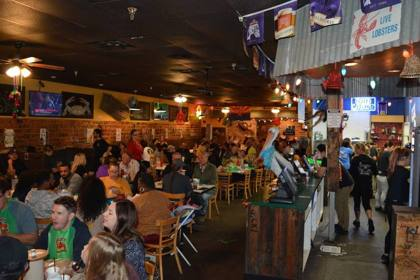
Angry Crab ShackMesa, Peoria + · 39No NZ/AU plan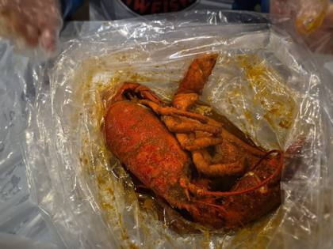
Hot N Juicy CrawfishLas Vegas, West Hollywood + · 36No NZ/AU plan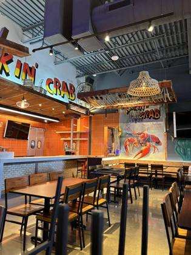
The Kickin' CrabWestminster CA, San Jose CA · 25No NZ/AU plan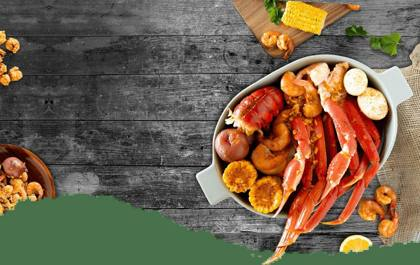
The Juicy CrabHouston TX, Orlando FL · 24No NZ/AU plan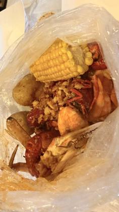
Shaking CrabNewton MA, Brooklyn NY · 24NZ/AU signals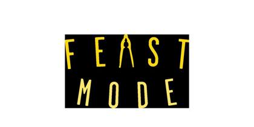
The Boiling CrabGarden Grove CA, Houston TX + · 23NZ/AU ?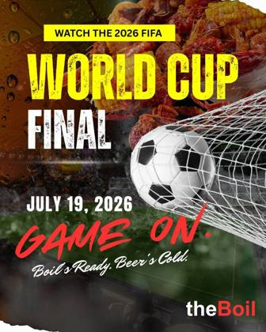
theBoilNew York NY · 19NZ/AU ?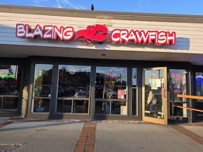
Blazing CrawfishEverett WA · 18NZ/AU ?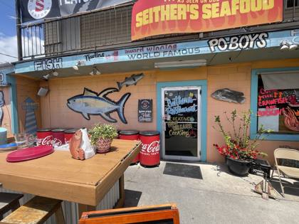
Seither's SeafoodHarahan LA · 16NZ/AU ?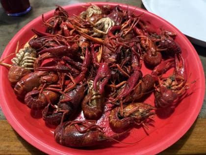
Crawfish Town USAHenderson LA · 15NZ/AU ?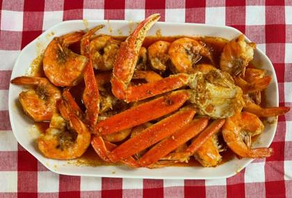
Kajun KingHumble TX · 14NZ/AU ?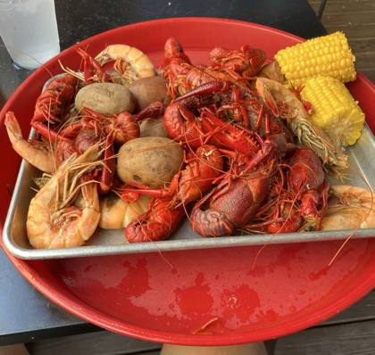
Clesi'sNew Orleans LA · 13NZ/AU ?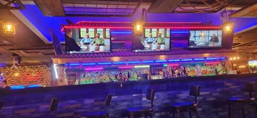
The Captain CrabLakewood WA · 12No NZ/AU plan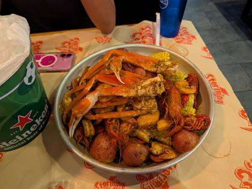
Storming CrabOcala FL, Pigeon Forge TN · 11NZ/AU ?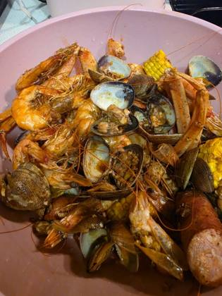
Crawfish KingSeattle WA, Severo-Kuril'sk, Sakhalin · 11NZ/AU ?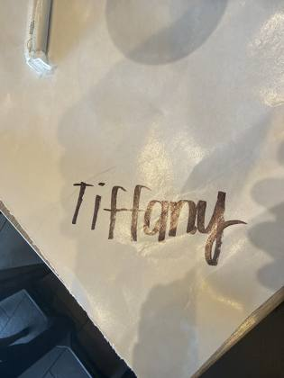
Crab HutSan Diego, California, Roseville, Michigan · 11No NZ/AU plan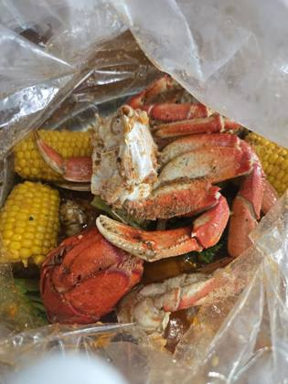
Crab Du JourPhiladelphia PA · 10No NZ/AU plan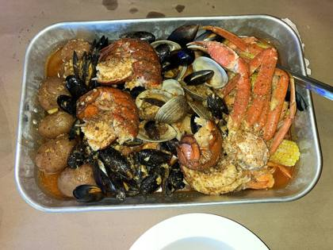
Red Crab Juicy SeafoodRockville Centre NY · 10No NZ/AU plan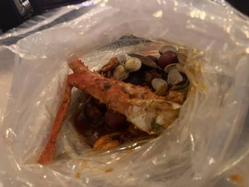
Crafty CrabOrlando FL · 10NZ/AU ?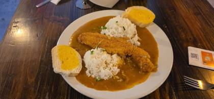
Cajun CraftWaco, Texas · 10NZ/AU ?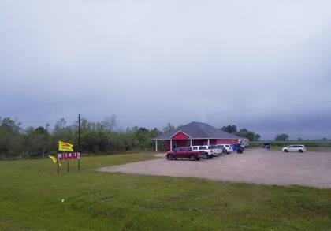
Juju's Cajun Crawfish ShakFannett, Texas · 9No NZ/AU plan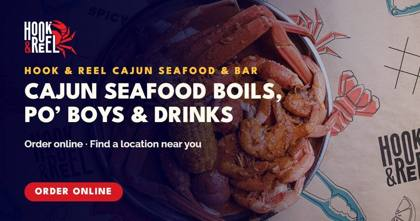
Hook & ReelHouston TX · 8NZ/AU ?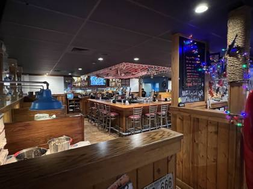
Crab King Cajun Boil & BarTacoma WA · 8NZ/AU ?The Juicy SeafoodNew Orleans LA, Sandy Springs GA · 8NZ/AU ?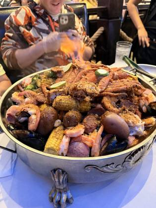
Flaming Crab Cajun SeafoodGeorgetown, Pennsylvania · 8NZ/AU ?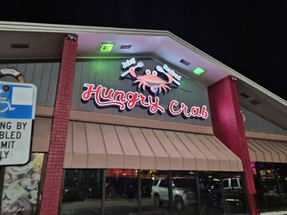
The Hungry CrabDoctor Phillips, Florida · 8NZ/AU ?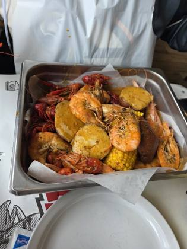
Million's CrabAshwaubenon, Wisconsin · 8NZ/AU ?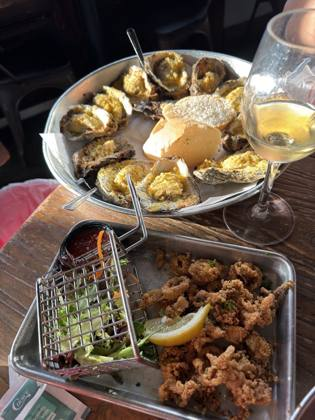
Boil Seafood HouseHarvey, Louisiana · 8NZ/AU ?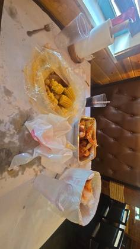
Blue Coast Juicy SeafoodJenks, Oklahoma · 8NZ/AU ?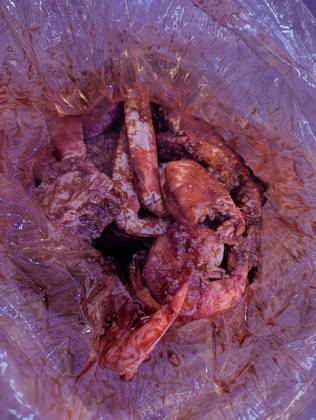
The Boiler Seafood AtlantaDruid Hills, Georgia · 8NZ/AU ?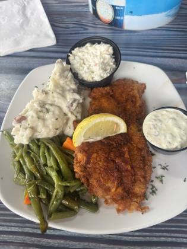
The Beach Tiki Bar & BoilWalled Lake, Michigan · 8NZ/AU ?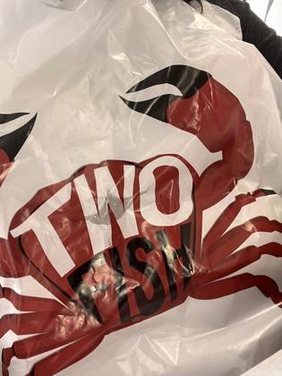
Two Fish Crab ShackChicago, Illinois · 8NZ/AU ?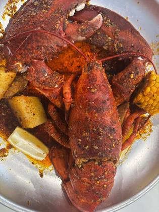
Ocean Seafood BoilSpring Valley, Nevada · 8NZ/AU ?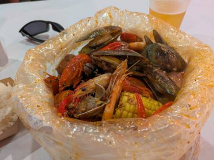
Kickin Kajun HonoluluHonolulu, Hawaii · 8NZ/AU ?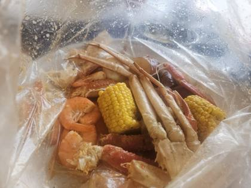
Big CrabJacksonville, Florida · 8NZ/AU ?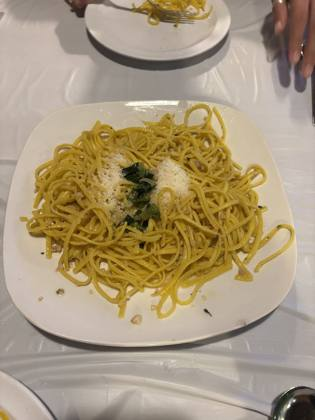
FOB (Fried Or Boiled)Fresno, California · 8NZ/AU ?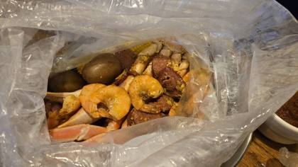
Super Crab Juicy SeafoodRochester, New York · 8NZ/AU ?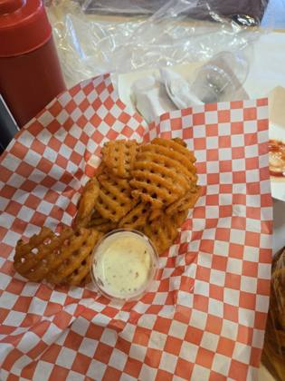
The Crawfish GuyClovis, California · 8NZ/AU ?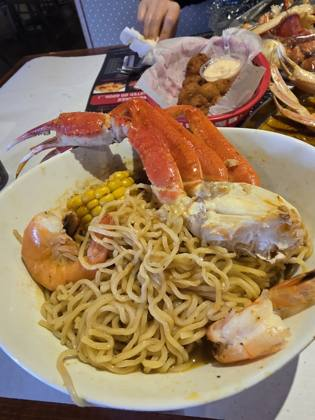
Ocean Treasures Cajun Seafood and BarMonroeville, Pennsylvania · 8NZ/AU ?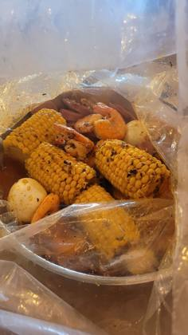
Super Happy CrabHanahan, South Carolina · 8NZ/AU ?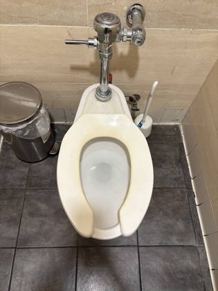
Seafood and CrawfishPedley, California · 8NZ/AU ?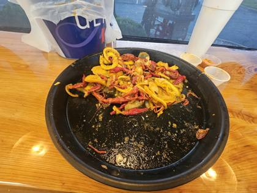
Chuck Wagon CrawfishBossier City, Louisiana · 8NZ/AU ?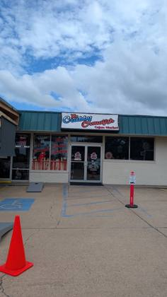
The Crabby CrawfishBossier City, Louisiana · 8NZ/AU ?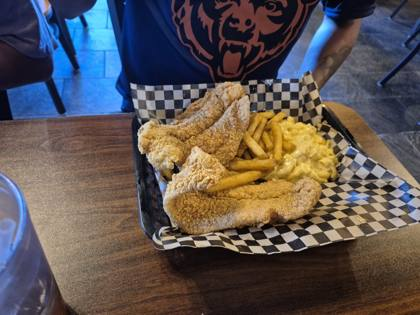
G's Cajun HouseEl Paso, Texas · 8NZ/AU ?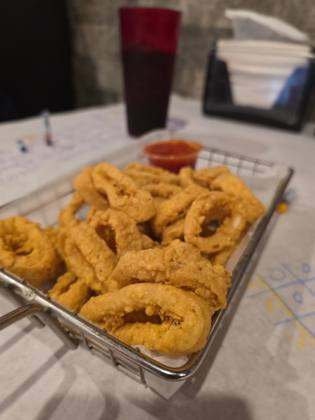
The Krab HutPine Manor, Florida · 8NZ/AU ?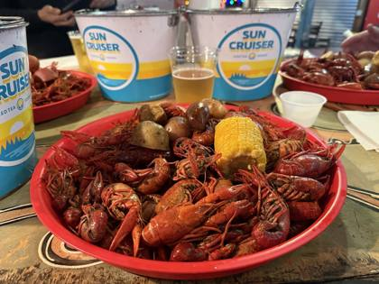
The Crawfish House (Ocean Springs)Ocean Springs, Mississippi · 8NZ/AU ?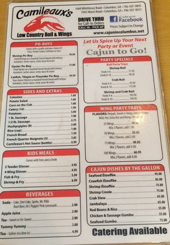
Camileaux's Low Country Boil & WingsPhenix City, Alabama · 8NZ/AU ?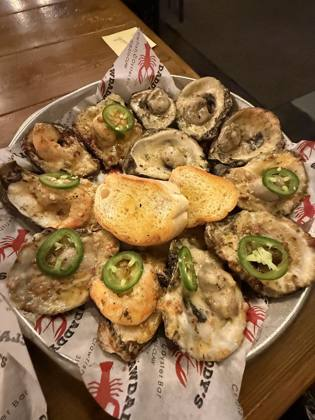
Claw Daddy's Crawfish and Oyster BarLakeshore, Louisiana · 8NZ/AU ?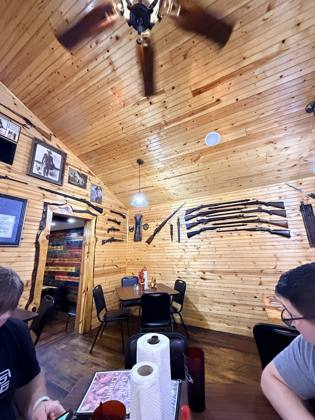
Swamp Daddys CrawfishAlexandria, Louisiana · 8NZ/AU ?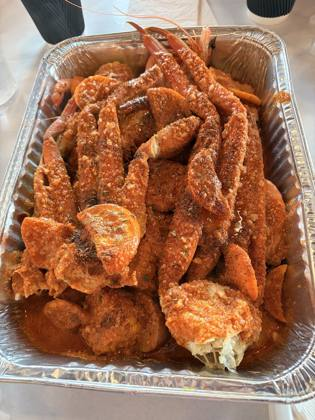
Hot Cajun CrawfishMountlake Terrace, Washington · 8NZ/AU ?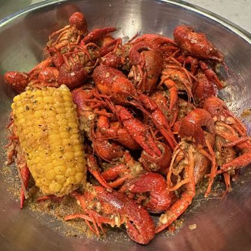
Crawfish & NoodlesHouston TX · 7NZ/AU ?BOOM BOOM CRAB CAJUN SEAFOOD & BARCatonsville, Maryland · 7NZ/AU ?Boil Bay Cajun Seafood & BarVirginia Beach, Virginia · 7NZ/AU ?Blue Hook Cajun Seafood & BarBellaire, Kansas · 7NZ/AU ?Crawfish PalaceRed Chute, Louisiana · 7NZ/AU ?Cajun Crabs & ShrimpHarker Heights, Texas · 7NZ/AU ?Royal KrabzCorpus Christi, Texas · 7NZ/AU ?Spicy Krabs SeafoodSlidell, Louisiana · 7NZ/AU ?Bevi Seafood Co.New Orleans LA · 6NZ/AU ?Crawfish IslandFederal Way WA, Sand Point, Alaska · 6NZ/AU ?Sammy Crawfish KingBaton Rouge LA · 6NZ/AU ?Mr. & Mrs. Crab Juicy Seafood & BarCelebration, Florida · 6NZ/AU ?Boil DaddyCimarron Hills, Colorado · 6NZ/AU ?Crazy CrabFairfax, Virginia · 6NZ/AU ?Bag O' CrabEsperance, Washington · 6NZ/AU ?Juicy SeafoodLayhill, Maryland · 6NZ/AU ?Yummy CrabCharlotte, North Carolina · 6NZ/AU ?King ClawNorth Charleston, South Carolina · 6NZ/AU ?Fiery Crab Seafood Restaurant And BarVillage Saint George, Louisiana · 6NZ/AU ?Cajun CornerOklahoma City, Oklahoma · 6NZ/AU ?Crab N SpiceSpring Valley, Nevada · 6NZ/AU ?LA CrawfishHelotes, Texas · 6NZ/AU ?The Twisted CrabSugar Hill, Georgia · 6NZ/AU ?The Tangy CrabWaverly, Michigan · 6NZ/AU ?Lee's Seafood BoilWorthington, Ohio · 6NZ/AU ?Red Hook Cajun Seafood & BarLakeland, Tennessee · 6NZ/AU ?Cajun CrackinNellis Air Force Base, Nevada · 6NZ/AU ?Smashin CrabLeon Valley, Texas · 6NZ/AU ?LA Crab ShackTempe, Arizona · 6NZ/AU ?La Juicy SeafoodHendron, Kentucky · 6NZ/AU ?Hot N Cajun Boil HouseNew Orleans, Louisiana · 6NZ/AU ?Juicy Seafood & BarDuncanville, Texas · 6NZ/AU ?Crackin' CrabParadise Hills, New Mexico · 6NZ/AU ?Krazy Cajun Seafood & HibachiPhoenix, Arizona · 6NZ/AU ?Aloha Krab Cajun Seafood & BarMcKownville, New York · 6NZ/AU ?HAPPY CRABSeattle, Washington · 6NZ/AU ?Juicy King Crab ExpressEast New York, New York · 6NZ/AU ?Mr. Crabby's Cajun Seafood & BarHollywood Park, Texas · 6NZ/AU ?Cajun Crab Juicy Seafood & BarJacksonville, Florida · 6NZ/AU ?Crab Shack RestaurantGandy, Florida · 6NZ/AU ?King Cajun CrawfishOrlando, Florida · 6NZ/AU ?Juicy Seafood ClevelandOrange, Ohio · 6NZ/AU ?Bucket O' CrawfishTaylorsville, Utah · 6NZ/AU ?The Crab BarrackCenter Point, Alabama · 6NZ/AU ?Crawfish HouseWhite Center, Washington · 6NZ/AU ?Oceanic BoilLong Island City, New York · 6NZ/AU ?Firehouse CrawfishFlorin, California · 6NZ/AU ?Juicy TailsCave Springs, Arkansas · 6NZ/AU ?The Monster Crab AYCE Seafood & BarEast Atlantic Beach, New York · 6NZ/AU ?Crab PubLemon Grove, California · 6NZ/AU ?Ocean CrabChantilly, Virginia · 6NZ/AU ?The King Crab ShackWest Milwaukee, Wisconsin · 6NZ/AU ?Cajun Claws Seafood Boil HouseOakland, California · 6NZ/AU ?Seafood BoilMilltown, New Jersey · 6NZ/AU ?Outer Banks Boil CompanyKitty Hawk, North Carolina · 6NZ/AU ?The Crawfish HutBurien, Washington · 6NZ/AU ?Oh My CrabLincolnwood, Illinois · 6NZ/AU ?Cajun Seafood & WingsOrangeburg, South Carolina · 6NZ/AU ?The Fire CrabWestminster, California · 6NZ/AU ?Ruby's Cajun Seafood BoilhouseWyndmoor, Pennsylvania · 6NZ/AU ?The Dancing CrabForest City, Florida · 6NZ/AU ?Aqua BoilManhattan, New York · 6NZ/AU ?Tejun The Texas CajunRobinson, Texas · 6NZ/AU ?Crawfish Asian CuisineReno, Nevada · 6NZ/AU ?Boulet's Boil-N-GoSulphur, Louisiana · 6NZ/AU ?Red Tails Boil HouseMoss Bluff, Louisiana · 6NZ/AU ?King Claw Juicy Seafood & BarAlbany, Georgia · 6NZ/AU ?Cajun SeafoodNew Orleans LA · 5NZ/AU ?The Crawfish SpotLafayette LA · 5No NZ/AU planKrab KingzCypress TX · 5NZ/AU ?Yummi CrabMission Hills, Kansas · 5NZ/AU ?The Crab StationRichardson, Texas · 5NZ/AU ?A Plus CrabPontiac, Michigan · 5NZ/AU ?Cape Fear Boil CompanyLong Beach, North Carolina · 5NZ/AU ?192 Crab & Lobster Juicy SeafoodCelebration, Florida · 5NZ/AU ?The Boiling House Seafood BoilGreentree, New Jersey · 5NZ/AU ?King Wok Seafood BoilDearborn, Michigan · 5NZ/AU ?LarryP's Boiling PotBossier City, Louisiana · 5NZ/AU ?El Rayo Seafood BoilTucson, Arizona · 5NZ/AU ?100 Boil Pot & GrillCatalina Foothills, Arizona · 5NZ/AU ?Boiling Pot Seafood And BarBellview, Florida · 5NZ/AU ?The Boiling Pot (Fulton)Fulton, Texas · 5NZ/AU ?J&C Crab Juicy SeafoodFort Myers, Florida · 5NZ/AU ?Viet Cajun GalvestonGalveston, Texas · 5NZ/AU ?Boil CityBeaumont, Texas · 5NZ/AU ?Krunchy KrabLakeland, Florida · 5NZ/AU ?Buckets Crawfish and SeafoodPineville, Louisiana · 5NZ/AU ?Crawfish CafeHouston TX · 4NZ/AU ?The Mighty CrabBenton, Arkansas · 4NZ/AU ?Laughing CrabClive, Iowa · 4NZ/AU ?Cajun Boil & BarOakbrook Terrace, Illinois · 4NZ/AU ?Tasty Crab Seafood RestaurantLaurel, Virginia · 4NZ/AU ?Submarine CrabSan Diego, California · 4NZ/AU ?Pier 88 Boiling Seafood & BarRedstone Arsenal, Alabama · 4NZ/AU ?Surfing CrabBalcones Heights, Texas · 4NZ/AU ?Mr. Crab Seafood & BarFairfield, Connecticut · 4NZ/AU ?Lil Animals CrawfishBossier City, Louisiana · 4NZ/AU ?Cravin' CrawfishTacoma, Washington · 4NZ/AU ?Dirty Cajun Seafood KitchenBedford, Texas · 4NZ/AU ?Dockside Boiling PotVictoria, Texas · 4NZ/AU ?Crawdaddy's Boil-N-GoWhitehouse, Texas · 4NZ/AU ?Captain Crab Seafood RestaurantArden-Arcade, California · 3NZ/AU ?Crawfish ChefEast Hill-Meridian, Washington · 3NZ/AU ?Cajun King / Lucky ChowJackson, Tennessee · 3NZ/AU ?Rocking CrabBellair-Meadowbrook Terrace, Florida · 3NZ/AU ?Rockin CrawfishOakland, California · 3NZ/AU ?Cajun King SeafoodSouthaven, Mississippi · 3NZ/AU ?Hot & Spicy Cajun Seafood & BarWolfforth, Texas · 3NZ/AU ?Crawfish TymeBossier City, Louisiana · 3NZ/AU ?Crawfish BarnPearl, Mississippi · 3NZ/AU ?Boil ShackOttawa Hills, Ohio · 3NZ/AU ?The Boilin' BayouKilleen, Texas · 3NZ/AU ?Boiling DragonFresno, Texas · 3NZ/AU ?Hot Tails Crawfish & SeafoodTexarkana, Arkansas · 3NZ/AU ?Rockin Crab Seafood Boil & TakeoutSummerlin South, Nevada · 2NZ/AU ?Louisiana Crab ShackAustin, Texas · 2NZ/AU ?Crab and Boil SeafoodMontrose, Virginia · 2NZ/AU ?Louis Cajun SeafoodNewport, Kentucky · 2NZ/AU ?Crazy Cajun BeaumontBeaumont, Texas · 2NZ/AU ?The Bucket Crab & CrawfishOntario, California · 2NZ/AU ?Red Pier Cajun Seafood & BarGermantown, Tennessee · 1NZ/AU ?The Cajun CrabLakewood, California · 1NZ/AU ?Crack CrabRockledge, Pennsylvania · 1NZ/AU ?Mr. Crab RestaurantJacksonville, Florida · 1NZ/AU ?Luke's Boiling PointHouma, Louisiana · 1Every boil listing found · 1273
Google Maps listings whose name says boil / crawfish / Cajun / crab etc. Swept 20 Oct 2026. Not all verified as bag boils; tap to open the listing.
Alabama · 41
- 5 O'clock Seafood Boil Service Gulf Shores · ★5.0 (116)
- Amazin’ Cajun Dothan, 2155 E Main St Ste 3 · ★4.7 (190)
- Big Blue Crawfish Opelika, 2611 Pepperell Pkwy · ★5.0 (52)
- Cajun Boys & Our Poboys Pelham, 3120 Hwy 52 W · ★4.4 (856)
- Cajun Cafe Eutaw, 208 Main St · ★4.7 (144)
- Cajun Cleaver Helena, 2341 John Hawkins Pkwy Ste 101 · ★4.8 (92)
- Cajun Roux Bar & Grill Helena, 5220 Peridot Pl Ste 132 · ★4.4 (1,650)
- Cajun Seafood House Vestavia Hills, 2531 Rocky Ridge Rd Ste 107 · ★4.4 (1,163)
- Cajun Steamer Bar & Grill Trussville, 5071 Pinnacle Sq · ★4.2 (1,661)
- Cajun Steamer Bar & Grill Hoover, 180 Main St #200 · ★4.3 (1,332)
- Cajun Steamer Bar & Grill Huntsville, 301 Pelham Ave SW Ste C-1 · ★4.3 (2,562)
- Crazy Cajuns' Boiling Pot Meadowbrook, 125 Inverness Plaza · ★4.3 (519)
- Crazy Crab Pike Road, 2727 Bell Rd · ★4.4 (327)
- Jubilee Joe's Cajun Seafood Restaurant Helena, 5190 Medford Dr Ste 114 · ★4.5 (3,502)
- King Claw - Juicy Seafood & Bar Phenix City, 1591 Bradley Park Dr Ste F5 · ★4.7 (2,915)
- P&T Cajun Seafood Mobile, 1318 Dauphin Island Pkwy · ★4.5 (144)
- Pier 88 Boiling Seafood & Bar Redstone Arsenal, 5850 University Dr NW Ste D3 · ★4.7 (3,569)
- Red Mountain Crawfish Homewood, 195 Vulcan Rd · ★4.8 (461) · temporarily closed
- Roll Cajun Boudin Birmingham, 2208 6th Ave S · ★4.8 (714)
- The Boiling Pot Prichard, 3704 Airport Blvd · ★4.3 (1,793)
- The Cajun Boiling Spot LLC Atmore, 310 Trammell St · ★4.5 (117)
- The Crab Barrack Center Point, 9417 Parkway E · ★4.1 (1,656)
- The Crab Barrack Birmingham, 1108 20th St S · ★3.8 (170)
- The Crab Barrack Irondale, 7861 Crestwood Blvd · ★4.1 (547)
- The Crab Barrack Fairfield, 2451 Crossplex Blvd · ★3.8 (66)
- The Crab Barrack-Midfield Midfield, 103 Bessemer Super Hwy · ★4.0 (381)
- The Juicy Crab - Dothan Midland City, 4753 Montgomery Hwy · ★4.7 (2,385)
- The Juicy Crab Mobile Prichard, 3250 Airport Blvd B-6 · ★4.7 (2,227)
- The Juicy Crab Montgomery Pike Road, 6814 Eastchase Pkwy · ★4.1 (1,515)
- The Juicy Seafood Indian Springs Village, 615 Cahaba Valley Rd · ★4.0 (787)
- The Juicy Seafood Tillmans Corner · ★4.3 (1240)
- The Juicy Seafood and Bar Redstone Arsenal, 4925 University Dr NW B · ★4.5 (2,398)
- The Moody Crab Flint City, 1241 Point Mallard Pkwy #406 · ★4.2 (935)
- Troy's juicy crab Troy, 1677 US-231 · ★4.1 (147)
- WOW CRAB cajun seafood and bar restaurant Montgomery, 2690 Eastern Blvd · ★4.4 (266)
- Yummi Crab Auburn, 2111 S College St · ★4.0 (217)
- The Juicy Seafood Phenix City · ★4.0 (1574)
- Camileaux's Low Country Boil & Wings Phenix City · ★4.3 (881)
- Cajun's Seafood Restaurant Florence · ★4.2 (456)
- USA Cajun Station (at The Galley on McCoy) Smiths Station · ★4.9 (60) · temporarily closed
- Cajun Roots Crawfish Dothan · ★5.0 (5)
Alaska · 2
- Cajun Corner Anchorage, 302 G St · ★4.4 (277)
- Inferno Seafood Boil Anchorage, Closes 9 PM
Arizona · 32
- 100 Boil Pot & Grill Catalina Foothills · ★4.5 (91)
- Angry Crab Shack Phoenix, 2808 E Indian School Rd D110 · ★4.3 (3,261)
- Angry Crab Shack San Carlos, 2740 S Alma School Rd · ★4.4 (4,512)
- Angry Crab Shack Anthem, 2501 W Happy Valley Rd Bldg 48 · ★4.4 (2,048)
- Angry Crab Shack Peoria, 7608 W Cactus Rd · ★4.4 (4,218)
- Angry Crab Shack Paradise Valley, 3227 E Bell Rd D110 #D110 · ★4.2 (1,060)
- Angry Crab Shack Goodyear, 310 N Litchfield Rd · ★4.2 (2,697)
- Angry Crab Shack Surprise, 11340 W Bell Rd · ★4.2 (1,317)
- Angry Crab Shack Scottsdale, 8909 E Talking Stick Wy · ★4.2 (563)
- Angry Crab Shack Guadalupe, 660 W Warner Rd · ★4.3 (505)
- Angry Crab Shack Mesa, 1927 N Gilbert Rd · ★4.6 (24)
- Angry Crab Shack (Laveen) Laveen, 6360 S 35th Ave Ste 160 Ste 160 · ★3.9 (550)
- Baby Kay's Cajun Kitchen San Carlos, 2051 S Dobson Rd Ste 18 · ★4.5 (2,759)
- Bag O' Crab Casas Adobes · ★4.6 (669)
- Bag O’ Crab Goodyear, 1363 N Litchfield Rd · ★4.7 (251)
- Crabby Mama’s Boil Maricopa, 44611 Mescal St · ★4.9 (21)
- El rayo seafood boil Tucson · ★4.6 (137)
- Harbor Seafood Cajun House Laveen, 3414 W Southern Ave 168 B · ★4.2 (398)
- Harbor seafood Cajun house & Ramen Tempe Junction, 930 W Broadway Rd Unit 10 · ★4.4 (184)
- Hot N Juicy Crawfish Paradise Valley, 7000 E Mayo Blvd #1114 · ★3.7 (235)
- Hot N Juicy Crawfish Peoria, 6751 N Sunset Blvd Ste E101 · ★3.9 (2,662)
- Krazy Cajun Seafood & Hibachi-Mesa Gilbert, 6555 E Southern Ave suite B44 · ★4.8 (24)
- Krazy Cajun Seafood & Hibachi-Phoenix Phoenix, 24 W Camelback Rd Unit H · ★4.2 (670)
- Krazy Cajun Seafood & Hibachi-Tempe Guadalupe, 9880 S Rural Rd #105 · ★4.5 (183)
- LA Crab Shack (Ahwatukee) Guadalupe, 4803 E Ray Rd Ste 103 · ★4.6 (177)
- LA Crab Shack (Mesa) Tempe, 1948 W Broadway Rd #101 · ★4.5 (2,089)
- LA Crab Shack (Peoria) Peoria, 6750 W Peoria Ave #127 · ★4.2 (405)
- Pier 88 Boiling Seafood & Bar Avondale Tolleson, 10040 W McDowell Rd · ★4.5 (1,550)
- Pier 88 Boiling Seafood & Bar Mesa Mesa, 945 N Dobson Rd · ★4.3 (771)
- The Kickin' Crab Chandler, AZ Chandler, 1840 W Chandler Blvd Ste 5 · ★4.7 (663)
- The Kickin' Crab Mesa Tempe, 28 S Dobson Rd #101 · ★4.9 (850)
- The Kickin’ Crab Avondale Tolleson, 1035 N Avondale Blvd · ★4.3 (145)
Arkansas · 20
- Cajun Boilers Piney, 2806 Albert Pike Rd · ★4.3 (1,965)
- Cajun Connection Dumas, 702 US-65 · ★4.8 (25)
- Craw Billy's Seafood Boil & BBQ Marshall, 12633 N, 12633 US-65 · ★4.4 (311)
- Crawpappy's - Cajun Cuisine Alma, 1915 N Hwy 71 · ★4.6 (681)
- Down the Bayou Cajun Specialty Meats and Gifts Tontitown, 5320 W Sunset Ave Ste 170 · ★4.8 (33)
- Hot Tails II Crawfish Arkadelphia, 5005 Valley St · ★4.7 (52)
- Juicy Seafood Maumelle, 11600 Pleasant Ridge Rd · ★4.0 (1,047)
- Juicy Seafood - North Little Rock North Little Rock, 4131 John F Kennedy Blvd Ste E · ★4.3 (108)
- Pier 88 Boiling Seafood Jonesboro, 2324 Red Wolf Blvd · ★4.1 (497)
- Red Pier Cajun Seafood & Bar - Service Rd. West Memphis, 222 N Service Rd · ★3.8 (408)
- Sandra Rose Kitchen (Cajun Seafood) Little Rock, 801 S Chester St · ★3.9 (22)
- Sirenitas Crab Boil Warren, 301 S Main St · ★4.6 (9)
- The Cajun Fried House Pine Bluff, 3007 S Olive St · ★4.0 (289)
- The Mighty Crab Benton, 17306 I-30 · ★4.7 (1,740)
- The Mighty Crab Little Rock, 1817 S University Ave · ★4.1 (927)
- The Mighty Crab Little Rock, 225 N Shackleford Rd · ★4.1 (576)
- The Mighty Crab Fort Smith, 5707 Rogers Ave · ★4.3 (976)
- The boil Downtown LR Little Rock, 801 S Chester St · ★3.7 (15)
- Who Dat's Cajun Restaurant Bald Knob, 3209 AR-367 · ★4.6 (968)
- Hot Tails Crawfish & Seafood- Texarkana Texarkana · ★4.7 (423) · temporarily closed
California · 130
- 938 Crawfish Albany, 938 San Pablo Ave · ★4.2 (455)
- Asian N Cajun Sacramento, 4271 Truxel Rd b1 · ★4.3 (464)
- Bag O Crab National City, 2220 E Plaza Blvd D · ★4.6 (38)
- Bag O Crab Fullerton, 1349 S Harbor Blvd · ★4.8 (482)
- Bag O Crab Pleasanton, 3776 Fallon Rd · ★3.9 (100)
- Bag O Crab Sunnyvale · ★4.2 (83)
- Bag O' Crab Bakersfield, 4154 California Ave · ★4.5 (152)
- Bag O' Crab Salida, 3919 Pelandale Ave Bldg D · ★4.3 (885)
- Bag O' Crab Biola, 6479 N Riverside Dr · ★4.3 (468)
- Bag O' Crab Boronda, 1401 N Davis Rd · ★3.9 (443)
- Bag O' Crab Montebello, 2501 Via Campo · ★4.8 (858)
- Bag O' Crab San Leandro, 101 Parrott St · ★4.2 (623)
- Bag O' Crab Clovis Clovis · ★4.7 (39)
- Bag O’ Crab Merced, 455 W Olive Ave · ★4.2 (542)
- Bag O’ Crab Escondido, 1535 E Valley Pkwy #102 · ★4.6 (242)
- Blue Water Seafood & Crab Milpitas, 4180 N First St Unit 10 · ★4.1 (1,082)
- Boil Baby Boil Beverly Hills, 8939 Santa Monica Blvd Suite B · ★4.9 (95)
- Boil Daddy - Corona Corona, 490 Hidden Valley Pkwy Ste 102 · ★4.5 (133)
- Boil Daddy - DTLA Los Angeles, 1225 E Washington Blvd Unit C · ★4.5 (498)
- Boil Daddy - Garden Grove Garden Grove, 12881 Haster St Ste B · ★4.5 (168)
- Boil Daddy - Inglewood Westmont, 11315 S Figueroa St #103 · ★3.3 (117)
- Boil Daddy - Koreatown Hollywood, 615 N Western Ave · ★3.8 (39)
- Boil Daddy - Normandie & Washington Echo Park, 1842 W Washington Blvd · ★4.2 (86)
- Boil Daddy - Orange Orange, 205 S Tustin St · ★4.6 (200)
- Boil Daddy - San Diego Coronado, 2558 Laning Rd Ste 102 · ★4.6 (695)
- Boil Daddy - Santa Ana Santa Ana, 31 E Macarthur Cres #102 · ★4.2 (49)
- Boil Daddy - Stanton Stanton, 7015 Katella Ave · ★4.0 (113)
- Boil Daddy - West LA Westwood, Los Angeles, 10928 W Pico Blvd · ★4.4 (232)
- Boxing Crab La Mesa, 6663 El Cajon Blvd Suite A · ★4.6 (150)
- Bucket O' Crawfish Oakland, 1919 Webster St · ★4.2 (263)
- CAJUN BOWL SAN BRUNO San Bruno, 1230 El Camino Real d · ★4.1 (155)
- CRAWFISH LA Seven Trees, 2857 Senter Rd · ★4.2 (13)
- Cajun & Sushi House North Highlands, 2921 Elverta Rd · ★4.4 (254)
- Cajun Bistro 7 Seven Trees, 3005 Silver Creek Rd Ste 116 · ★4.3 (211)
- Cajun Bowl San Mateo San Mateo, 168 E 4th Ave · ★3.8 (105)
- Cajun Claws Seafood Boil House Oakland, 1951 Telegraph Ave #2 · ★4.8 (825)
- Cajun Crab Shack Thousand Oaks, 1074 E Avenida De Los Arboles · ★4.0 (283)
- Cajun Crack'n Milpitas Milpitas, 275 Ranch Dr · ★4.7 (1,514)
- Cajun Crack'n Stockton Lincoln Village, 7628 Pacific Ave Ste 101 · ★4.3 (185)
- Cajun Crackin Clovis, 7735 N Blackstone Ave #115 · ★4.3 (405)
- Cajun Crackin Vacaville, 200 Nut Tree Pkwy · ★4.1 (556)
- Cajun Crackn Concord Pleasant Hill, 1975 Diamond Blvd E361 · ★4.6 (841)
- Cajun Crawfish Stop Irwindale, 405 N Vincent Ave · ★4.7 (362)
- Cajun House San Francisco, 308 5th Ave · ★4.3 (324)
- Captain Crab Tarpey Village, 1240 Shaw Ave Ste 101 · ★4.1 (327)
- Captain Crab Seafood Restaurant - Sacramento Arden-Arcade, 1785 Challenge Way · ★4.3 (1,117)
- Captain Crawfish Cajun Seafood Bakersfield Greenacres, 4000 Coffee Rd #2 · ★4.1 (691)
- Chief's Da Crab Shack Bonita, 4110 Bonita Rd · ★4.6 (51)
- Claw Daddy's Cajun Seafood Greenfield, 2800 CA-119 · ★4.4 (517)
- Claw Shack San Jose, 1696 Berryessa Rd · ★4.5 (981)
- Cookin' Crab Fullerton, 1113 N Harbor Blvd · ★4.8 (517)
- Corn N' Crab Canoga Park, 21013 Sherman Way #3 · ★4.3 (518)
- Crab Boil & Things - Cajun Seafood Concord, 1847 Willow Pass Rd Ste D · ★4.2 (680)
- Crab Bucket Salinas, 1260 N Main St · ★4.2 (521)
- Crab N Spice Anaheim Anaheim, 160 W Lincoln Ave · ★3.8 (49)
- Crab in a Bag Bakersfield, 1641 Union Ave · ★4.2 (1,212)
- Crabby Crabby Newark - Best Seafood Cajun Food Restaurant Boiling Crab Shrimp Crawfish Bay Area Newark, 6225 Jarvis Ave · ★4.5 (290)
- FOB (Fried Or Boiled) Seafood Fusion Fresno · ★4.1 (1148)
- Firehouse Crawfish Parkway, 8148 Delta Shores Cir S · ★4.4 (211)
- Firehouse Crawfish | Cajun Seafood Restaurant Florin, 6519 Savings Pl · ★4.4 (1,133)
- Gardena Stinkin Crawfish Gardena, 15400 S Western Ave Unit C · ★4.3 (1,008)
- Hang Ten Boiler Alameda, 2315 Santa Clara Ave · ★4.3 (649)
- Hook & Reel Cajun Seafood & Bar Florin, 8211 Bruceville Rd · ★4.3 (246)
- Hot N Juicy Crawfish Fountain Valley, 15972 S Euclid St Ste D · ★4.4 (824)
- Jackpot Sushi & Crab Hollywood, 5230 Santa Monica Blvd · ★4.8 (333)
- Kick n Boil Crab Seafood Boil Tustin, 1945 17th St · ★4.8 (67)
- King Crab San Diego, 3960 W Point Loma Blvd · ★4.4 (569)
- L.A. CRAZY CRAB Florence-Graham, 1415 E Gage Ave suit c · ★4.9 (2,007)
- Lemon Crab Hayward, 24458 Mission Blvd · ★4.4 (239)
- Mlem Mlem Crab Cajun Seafood Tustin, 1945 17th St Ste 106 · ★4.2 (50)
- Mr. Crab Sacramento, 3581 Truxel Rd · ★3.9 (184)
- OH MY CRAB Silver Lake, 3000 W 6th St #100 · ★4.1 (470)
- Ocean 9 Crab Cajun & Seafood Antioch, 4250 Lone Tree Wy · ★4.2 (375)
- Raising Claw Garden Grove, 13265 Harbor Blvd · ★4.2 (192)
- Rockin Crawfish Oakland, 211 Foothill Blvd · ★4.4 (1,253)
- Rockin Crawfish San Pablo, 2300 El Portal Dr L · ★4.1 (594)
- Rockin' Cajun Carson, 940 E Dominguez St C · ★4.2 (756)
- STAR CRAB Ladera Heights, 5383 W Centinela Ave · ★4.5 (201)
- Seafood Boiler Norco, 1670 Hamner Ave STE 8,9 · ★4.6 (355)
- Seafood and Crawfish Pedley · ★4.1 (462)
- Shaking Crab Broadmoor, 25 Southgate Ave · ★4.2 (615)
- Smackem' Cajun Seafood Los Angeles, 659 Flower St · ★4.5 (133)
- Stinkin Crawfish of North Hills Van Nuys, 9102 Sepulveda Blvd · ★4.4 (861)
- Submarine Crab San Diego, 4647 Convoy St #101b · ★4.4 (365)
- Submarine Crab Garden Grove, 10130 Garden Grove Blvd #129 · ★4.4 (179)
- Super Cajun Seafood Express South Pasadena, 5528 York Blvd · ★4.6 (216)
- Supreme Crab Seafood Buffet San Francisco, 245 Jefferson St #2fl · ★3.6 (1,098)
- The Ace Crab National City, 3403 E Plaza Blvd Ste E · ★4.5 (445)
- The Boiling Crab South San Jose Hills, 18922 Gale Ave · ★4.6 (3,482)
- The Boiling Crab Silver Lake, 3377 Wilshire Blvd Unit 115 · ★4.5 (3,667)
- The Boiling Crab Garden Grove, 13892 Brookhurst St · ★4.6 (1,948)
- The Boiling Crab Torrance, 22901 Hawthorne Blvd · ★4.2 (407)
- The Boiling Crab Florin, 6910 65th St #100 · ★4.3 (2,446)
- The Boiling Crab Fairbanks Ranch, 9015 Mira Mesa Blvd · ★4.5 (2,246)
- The Boiling Crab Rosemead, 3514 Rosemead Blvd · ★4.4 (2,101)
- The Boiling Crab Seven Trees, 71 Curtner Ave Ste 20 · ★4.5 (2,961)
- The Boiling Crab Westwood, Los Angeles, 10875 Kinross Ave · ★4.5 (2,674)
- The Boiling Crab Calabasas, 23397 Mulholland Dr · ★4.5 (1,199)
- The Boiling Crab Burbank, 140 Palm Ave Unit 210 · ★4.5 (2,216)
- The Boiling Crab Alhambra, 129 W Main St · ★4.5 (2,094)
- The Boiling Crab Santa Ana, 1500 W MacArthur Blvd · ★4.6 (3,676)
- The Boiling Crab Tustin, 13451 Newport Ave · ★4.4 (30)
- The Boiling Crab Garden Grove, 14241 Euclid St c116 · ★4.6 (2,077)
- The Boiling Crab San Marcos, 110 Knoll Rd · ★4.3 (270)
- The Boiling Crab Seven Trees, 1631 E Capitol Expy · ★4.4 (1,911)
- The Boiling Crab Sacramento, 1000 K St #100 · ★4.4 (2,232)
- The Boiling Crab - TO GO Garden Grove, 13908 Brookhurst St B · ★4.1 (32)
- The Boiling Station Visalia, 3298 S Mooney Blvd · ★4.0 (244)
- The Cajun Crab Lakewood, 3253 E South St j101 · ★4.2 (531)
- The Cajun Crab Valinda, 2050 Valinda Ave · ★4.4 (49)
- The Crab Shack Cypress Cypress, 5735 Lincoln Ave · ★4.2 (200)
- The Crabby Crab Sherman Oaks, 4457 Van Nuys Blvd · ★4.2 (757)
- The Crawfish Company San Fernando, 13209 Gladstone Ave · ★4.6 (458)
- The Crawfish Guy Clovis · ★4.2 (677)
- The Crawfish Hut - Stanton Westminster, 12819 Beach Blvd · ★4.3 (77)
- The Fire Crab Westminster, 8335 Garden Grove Blvd · ★4.3 (258)
- The Kickin Crab Milpitas, 2675 Cropley Ave · ★4.3 (1,580)
- The Kickin' Crab Corona, 482 N Main St Ste 102 · ★4.3 (916)
- The Kickin' Crab Hollywood, 6122 Sunset Blvd · ★4.3 (413)
- The Kickin' Crab Irvine, 2740 Alton Pkwy · ★4.4 (1,212)
- The Kickin' Crab Santa Ana, 3611 S Bristol St · ★4.5 (660)
- The Kickin' Crab Buena Park, 8300 La Palma Ave Ste A6 · ★4.4 (1,396)
- The Kickin' Crab Seven Trees, 1735 E Capitol Expy · ★4.1 (755)
- The Kickin' Crab Downtown Santa Ana - Broadway Santa Ana, 518 N Broadway · ★4.6 (63)
- The Kickin' Crab at the Circle Orange, 116 E Chapman Ave · ★4.5 (80)
- The King Crawfish South San Jose Hills, 18205 Gale Ave · ★4.7 (386)
- The Roasted Crab Santa Clara, 3151 Mission College Blvd · ★3.8 (231)
- camarones cajun el original soler Imperial Beach · ★5.0 (10) · temporarily closed
- Boil Daddy - Valencia Santa Clarita · ★4.0 (94)
- Bag O' Crab Santa Rosa
Colorado · 20
- Asian Cajun Crab Shack & Bar Northglenn, 2841 W 120th Ave · ★4.8 (1,334)
- Boil Daddy - Boulder Boulder, 1622 Broadway · ★4.8 (205)
- Boil Daddy - Colorado Springs Cimarron Hills, 5996 Stetson Hills Blvd · ★4.3 (955)
- Crab & Shell Cajun Seafood Denver, 2819 E Colfax Ave · ★4.6 (766)
- Gator Tails Cajun + Creole Food Truck Longmont · ★4.9 (61)
- Grab and Crab Cajun Seafood and Bar Northglenn, 3909 E 120th Ave · ★4.3 (185)
- Hook & Reel Cajun Seafood & Bar Commerce City, 7407 E 36th Ave · ★4.2 (2,797)
- Hook & Reel Cajun Seafood & Bar Westminster, 9280 Sheridan Blvd · ★4.5 (2,854)
- Pier 8 Cajun Seafood & Bar in Arvada Arvada, 7490 W 52nd Ave · ★4.4 (998)
- Reddy Claws Lakewood, 3234 S Wadsworth Blvd Unit #N · ★4.3 (215)
- Reel Cajun Seafood Restaurant Englewood, 3820 River Point Pkwy Ste 104 · ★4.7 (320)
- Rusty Crab Daddy Seafood Restaurant And Bar Stratmoor, 1430 Harrison Rd · ★4.7 (1,169)
- The Crawling Crab Lakewood, 3215 S Wadsworth Blvd · ★4.4 (1,994)
- The Crawling Crab Denver, 781 S Federal Blvd · ★4.4 (204)
- The Juicy Seafood Aurora, 2727 S Parker Rd · ★4.2 (2,399)
- The Juicy Seafood Longmont, 2341 Clover Basin Dr · ★4.5 (536)
- The Juicy Seafood Colorado Springs, 501 Garden of the Gods Rd · ★4.3 (3,430)
- Perriteaux's Cajun Restaurant Colorado Springs · ★4.3 (183)
- Little Latitudes | Cajun Street Food Fort Collins · ★4.9 (86)
- Nick & Nays Cajun You Stratmoor · ★2.3 (3)
Connecticut · 15
- Boiling SOHO - Newington Newington, 2391 Berlin Tpke · ★4.3 (222)
- Breaking Crab Waterbury, 495 Union St Space# 2100 · ★4.2 (625)
- Cajun Boiled Seafood New Haven, 72A Church St · ★4.4 (798)
- Cajun Cafe & Grill Manchester, 194 Buckland Hills Dr · ★4.3 (70)
- Cajun Crab Wallingford, 950 Yale Ave · ★4.5 (154)
- Chosen 1 Cajun Seafood West Hartford, 2074 Park St · ★4.2 (805)
- Crab Du Jour Xpress Cajun Seafood Trumbull, 4086 Main St · ★4.1 (232)
- Hook & Reel Cajun Seafood & Bar Hartford, 71 William Shorty Campbell St · ★4.7 (2,531)
- Hook & Reel Cajun Seafood & Bar Orange, 385 Boston Post Rd · ★4.6 (3,131)
- Mr Crab Cajun Seafood, Sushi & Hibachi Restaurant Long Hill, 507 Gold Star Hwy #184 · ★4.5 (469)
- Mr. Crab Seafood & Bar Fairfield, 3488 Fairfield Ave · ★4.1 (1,155)
- Shaking Crab New London, 305 N Frontage Rd · ★4.3 (580) · temporarily closed
- THE CAJUN BOIL & BAR Torrington, 349 Winsted Rd · ★4.1 (211)
- The Hungry Crab West Hartford, 1144 New Britain Ave · ★4.1 (999)
- Yu's Fusion (Juicy Cajun Seafood) Middletown, 220 Main St · ★4.3 (497)
Delaware · 11
- Cajun Kates Bellefonte, 722 Philadelphia Pike · ★4.8 (746)
- Claws Seafood House - Rehoboth Beach Rehoboth Beach, 167 Rehoboth Ave · ★4.2 (1,046)
- Crab Du Jour Cajun Seafood & Bar Dover, 889 N Dupont Hwy · ★4.2 (770)
- Crab Du Jour Cajun Seafood & Bar Bellefonte, 2107 Concord Pike · ★4.2 (429)
- Crab Du Jour Cajun Seafood & Bar Newport, 1000 Churchmans Rd · ★3.8 (1,291)
- Crafty Crab Wilmington, 429 S Walnut St · ★4.0 (556)
- Delmarva Seafood Boil Bethany Beach, 14308 Coastal Hwy · ★4.8 (385)
- Oishii Ocean - Japanese & Cajun Seafood Newark, 170 E Main St · ★4.4 (154)
- The Surfing Crab Restaurant and Bar Lewes, 16723 Coastal Hwy · ★4.5 (1,213)
- Two Claws Bear, 1255 Quintilio Dr · ★4.0 (770)
- Upscale Crab & Seafood Lewes, 17580 Coastal Hwy · ★4.7 (254)
Florida · 72
- 192 Crab & Lobster Juicy Seafood and Bar Restaurant Celebration, 5073 W Irlo Bronson Memorial Hwy · ★4.7 (3,123)
- Autumn's Crab Rockledge, 920 Barton Blvd #6 · ★4.5 (849)
- Big Crab Jacksonville, 5149-1 Normandy Blvd · ★4.3 (2,156)
- Boiling Pot Seafood And Bar Bellview · ★3.9 (35)
- CRAZY CRAB Citrus Ridge, 8701 W Irlo Bronson Memorial Hwy · ★4.5 (1,370)
- Cajun Boil Seafood Restaurant Brickell Miami, 141 SW 7th St · ★4.9 (13,837)
- Cajun Boil Seafood Restaurant Hollywood Hollywood, 1822 S Young Cir · ★4.8 (1,155)
- Cajun Boil Seafood Restaurant Plantation Plantation, 8000 W Broward Blvd Ste 1329 · ★4.7 (1,552)
- Cajun Boil Seafood Restaurant West Flagler Fountainebleau, 10162 W Flagler St · ★4.8 (4,334)
- Cajun Cafe on the Bayou Pinellas Park, 8260 66th St N · ★4.6 (2,015)
- Cajun Crab Company Lake Lorraine, 1193 A, Eglin Pkwy N · ★4.2 (922)
- Cajun Crab Hut Saint Augustine South, 2125 US Highway 1 South, 2125 Dixie Hwy Ste A · ★4.4 (962)
- Cajun Crab Juicy Seafood & Bar Jacksonville, 410 Commerce Center Dr · ★4.8 (5,166)
- Cajun Crab Juicy Seafood & Bar Sunshine Ranches, 11401 Pines Blvd #892 · ★4.3 (199)
- Cajun Seafood Gotha, 827 Good Homes Rd · ★4.4 (797)
- Cajun Soul Bistro & Bar Rockledge, 333 King St · ★4.8 (764)
- Crab Du Jour Cajun Seafood & Sports Bar Allapattah, 3201 N Miami Ave Unit 106 · ★4.2 (1,355)
- Crab Shack Restaurant Gandy, 11400 Gandy Blvd N · ★4.3 (3,276)
- Crabby Village Seafood Boil – 4th St N Seafood Restaurant Lealman, 3153 4th St N · ★4.9 (625)
- Crafty Crab Williamsburg, 8496 Palm Pkwy · ★4.5 (1,755)
- Crafty Crab Jacksonville, 9840 Atlantic Blvd · ★4.1 (1,000)
- Crafty Crab Lakeside, 950 Blanding Blvd #1 · ★4.3 (2,210)
- Crawfish Shack Ferry Pass · ★5.0 (101)
- Dat Cajun Place Cafe Lower Grand Lagoon, 2705 Navy Blvd · ★4.6 (9,473)
- Happy Crab Tampa, 2115 E Hillsborough Ave #3 · ★4.0 (152)
- Hook & Reel Cajun Seafood & Bar Pembroke Pines, 7841 Pines Blvd · ★4.3 (1,620)
- Hot N Crazy Crab Bloomingdale, 133 E Bloomingdale Ave · ★4.5 (891)
- Hot n Juicy Crawfish Doctor Phillips, 7572 W Sand Lake Rd · ★4.1 (2,262)
- Hungry Crab Juicy Seafood & Bar All You Can Eat Largo, 13101 Seminole Blvd · ★4.2 (1,055)
- Hungry Crab Juicy Seafood & Bar Restaurant Orlando Alafaya, 11726 E Colonial Dr · ★4.5 (932)
- Hungry Crab Juicy Seafood and Bar Lake Buena Vista All You Can Eat Doctor Phillips, 12204 S Apopka Vineland Rd · ★4.5 (1,374)
- Hungry Crab Tampa Juicy Seafood & Bar All You Can Eat Pebble Creek, 19601 Bruce B Downs Blvd · ★4.2 (659)
- Jax Beach Boil Company Jacksonville Beach, 1131 3rd St N · ★4.9 (102)
- Juicy & Crab Citrus Ridge, 7777 W Irlo Bronson Memorial Hwy · ★4.4 (1,369)
- Juicy Seafood Sarasota, 560 N Washington Blvd · ★4.6 (678)
- Juicy Seafood Company Jacksonville, 4660-1 Salisbury Rd · ★4.0 (20)
- Jville Crab Shack #1 Jacksonville, 5625-2 Norwood Ave · ★4.4 (554)
- King Cajun Crawfish Orlando, 924 N Mills Ave · ★4.4 (2,720)
- King Cajun Crawfish Doctor Phillips, 7637 Turkey Lake Rd · ★4.5 (823)
- Krispy Krab Saint Petersburg, 3100 18th Ave S · ★4.6 (1,210)
- Lone Star Boil House & Sports Bar Panama City, 320 W 5th St · ★4.5 (374)
- Mr. & Mrs. Crab Juicy Seafood & Bar - Brandon Brandon, 2042 Badlands Dr · ★4.6 (4,542)
- Mr. & Mrs. Crab Juicy Seafood & Bar - Clearwater Safety Harbor, 23886 US Hwy 19 N · ★4.7 (4,084)
- Mr. & Mrs. Crab Juicy Seafood & Bar - Dale Mabry Greater Northdale, 15412 N Dale Mabry Hwy · ★4.7 (2,584)
- Mr. & Mrs. Crab Juicy Seafood & Bar - Fowler University, 1251 E Fowler Ave d3 · ★4.5 (2,489)
- Mr. & Mrs. Crab Juicy Seafood & Bar - Gandy Tampa, 4426 W Gandy Blvd · ★4.6 (2,795)
- Mr. & Mrs. Crab Juicy Seafood & Bar - Kirkman Orlovista, 3875 S Kirkman Rd · ★4.5 (2,751)
- Mr. & Mrs. Crab Juicy Seafood & Bar - Kissimmee Celebration, 5771 W Irlo Bronson Memorial Hwy · ★4.8 (10,060)
- Mr. & Mrs. Crab Juicy Seafood & Bar - Melbourne West Melbourne, 1700 W New Haven Ave Space#550 · ★4.7 (1,568)
- Mr. & Mrs. Crab Juicy Seafood & Bar - OBT Sky Lake, 7220 S Orange Blossom Trl · ★4.6 (1,615)
- Mr. & Mrs. Crab Juicy Seafood & Bar - Ocoee Gotha, 9467 W Colonial Dr · ★4.6 (1,456)
- Mr. & Mrs. Crab Juicy Seafood & Bar - Sanford Lake Mary, 1000 WP Ball Blvd · ★4.5 (1,847)
- Mr. & Mrs. Crab Juicy Seafood & Bar- Westchase Citrus Park, 11935 Sheldon Rd · ★4.5 (250)
- New Orleans Cajun Seafood Orlovista, 7256 W Colonial Dr · ★4.3 (1,719)
- Red Crab - Juicy Seafood (Eustis) Tavares, 2884 David Walker Dr · ★4.5 (658)
- Red Crab Juicy Seafood Ensley · ★4.3 (1545)
- Rock' n Crab Cajun Seafood and Bar Schall Circle, 871 Village Blvd #602B · ★4.4 (709)
- Rocking Crab Bellair-Meadowbrook Terrace, 8635 Blanding Blvd #201 · ★4.2 (1,346)
- Rocking Crab Seafood And Bar Saint Petersburg, 391 34th St N · ★4.3 (1,186)
- Rod's Crab Shack Monument Jacksonville, 1301 Monument Rd #13 · ★4.6 (760)
- T N Crab Shack Temple Terrace, 2120 E Sligh Ave · ★4.1 (976)
- The Boiling Crab South Miami, 5829 SW 73rd St · ★4.3 (804)
- The Dancing Crab Forest City, 884 W State Rd 436 · ★4.3 (2,736)
- The Juicy Crab Jacksonville, 1115 S Mary Susan Dr · ★4.4 (4,134)
- The Juicy Crab - Westside Bellair-Meadowbrook Terrace, 8106 Blanding Blvd · ★4.3 (4,042)
- The Juicy Crab I Drive Doctor Phillips, 7308 International Dr · ★4.2 (3,264)
- The Juicy Crab Jacksonville Jacksonville, 13150 City Station Dr · ★4.3 (1,986)
- The Juicy Seafood Mayport Atlantic Beach, 1487 Mayport Rd · ★4.5 (931)
- Wild Cajun Blue Crab & Shrimp Gulfport, 640 49th St S · ★4.3 (92)
- Yummy Crab Juicy Seafood Winter Garden, 13383 W Colonial Dr · ★4.6 (459)
- Zebo's Crab Shack Jacksonville, 1909 W Beaver St · ★4.3 (596)
- kraby crab ( North Nebraska ) Egypt Lake-Leto, 7107 N Nebraska Ave · ★4.4 (1,225)
Georgia · 36
- Angry Crab Shack Atlanta, 1380 Atlantic Dr NW Ste 14180 · ★3.6 (916)
- Boil Ramen & Cajun Seafood Rincon, 591 S Columbia Ave Ste e · ★4.5 (227)
- Cajun Bones College Park, 4803 Old National Hwy · ★4.4 (499)
- Cajun Seafood Co. Gainesville, 272 Dawsonville Hwy A · ★4.8 (225)
- Cajun Seafood Express Tifton, 809 W 2nd St · ★4.5 (465)
- Cajun Seafood Wings & Fish - Marietta Fair Oaks, 2909 Austell Rd SW C118 · ★4.8 (407)
- Cajun Wild Crab Remerton, 282 Norman Dr Unit A · ★4.2 (1,573)
- Cajun's City Seafood and Wings Atlanta Mableton, 4875 Floyd Rd SW Ste 103 · ★3.8 (119)
- Crab Du Jour Cajun Seafood Restaurant & Bar - Savannah Oglethorpe Mall Isle of Hope, 7804 Abercorn St Unit 70A · ★4.3 (1,024)
- FISH & CAJUN CRAB Winder, 111 E May St · ★4.5 (403)
- Hook & Reel Cajun Seafood & Bar Country Club Estates, 3640 Atlanta Hwy · ★4.6 (2,746)
- Hook & Reel Cajun Seafood & Bar Snellville, 2049 Scenic Hwy N · ★4.4 (1,327)
- King Cajun Seafood - Savannah Isle of Hope, 7312 Hodgson Memorial Dr · ★4.2 (760)
- King Claw - Juicy Seafood & Bar Morrow, 1965 Mt Zion Rd · ★4.5 (1,802)
- King Claw - Juicy Seafood & Bar Rome, 2204 Shorter Ave NW Ste 12 · ★4.5 (790)
- King Claw - juicy Seafood & Bar Douglas, 1312 S Madison Ave Ste A · ★4.7 (726)
- Krabs Hut Gresham Park, 1162 Moreland Ave SE Suite 600 · ★3.7 (129)
- Mr Krabs Hut - Cajun seafood Morrow, 2015 Mt Zion Rd · ★4.3 (414)
- Rockin' Crab Seafood & Bar Grovetown, 5150 Bluegrass Trail · ★3.9 (171)
- Rocky Claws Cajun Seafood Johns Creek, 11300 Medlock Bridge Rd #340 · ★4.8 (128)
- Shaking Crawfish Doraville, 5412 Buford Hwy NE · ★4.0 (1,117)
- SmackEm Cajun Seafood Atlanta, 620 Peachtree St NE suite 101 · ★3.1 (24)
- The Boiler Seafood Atlanta Druid Hills, 2425 Piedmont Rd NE · ★3.5 (2,434)
- The Juicy Crab Kennesaw, 2700 Town Center Dr #116 · ★4.4 (3,267)
- The Juicy Crab Buford, 3125 Woodward Crossing Blvd Suite 2000 · ★4.7 (3,330)
- The Juicy Crab Athens Athens, 2361 W Broad St · ★4.1 (265)
- The Juicy Crab Duluth Duluth, 2205 Pleasant Hill Rd · ★4.5 (7,937)
- The Juicy Crab Howell Mill Atlanta, 1715 Howell Mill Rd NW · ★4.5 (3,606)
- The Juicy Crab Smyrna Vinings, 2524 Cobb Pkwy SE · ★4.5 (6,509)
- The Juicy Crawfish Norcross, 5905 Jimmy Carter Blvd · ★4.3 (1,487)
- The Juicy Seafood Isle of Hope · ★4.3 (819)
- The Juicy Seafood Kitchen and Bar Dunwoody, 8371 Roswell Rd · ★4.6 (2,012)
- The Kickin’ Crab Johns Creek Johns Creek, 9700 Medlock Bridge Rd #194 · ★4.8 (604)
- The Pirate’s Boil Vinings, 2451 Cobb Pkwy SE · ★4.3 (1,303)
- King Claw - Juicy Seafood & Bar Albany · ★4.5 (1665)
- The Juicy Crab Albany Albany · ★4.4 (1140)
Hawaii · 11
- Cajun Crab Waikiki Honolulu, 226 Lewers St 2F L215 · ★4.9 (3,806)
- Cajun King Aiea 'Aiea, 98-020 Kamehameha Hwy · ★4.2 (499)
- Cajun King Kaneohe Kane'ohe, 46-148 Kahuhipa St · ★3.8 (181)
- Da Crawfish & Crabshack Makakilo City, 590 Farrington Hwy · ★4.1 (750)
- Da Seafood Boil Waimea Waimea, 9600 Kaumualii Hwy · ★4.9 (67)
- Da seafood boil Lihue, 3483 Rice St · ★4.7 (71)
- Kahuku Seafood Boil Kahuku, 56-481 Kamehameha Hwy · ★4.8 (18)
- Kickin Kajun Honolulu Honolulu, 655 Ke’eaumoku St Ste 101 · ★4.3 (1,111)
- Kickin Kajun Kaneohe He'eia, 46-056 Kamehameha Hwy · ★4.3 (131)
- Kickin Kajun Kapolei 'Ewa Villages, 91-5431 Kapolei Pkwy #401 · ★3.9 (737)
- The Boiling Crab Honolulu, 330 Coral St · ★4.2 (843)
Idaho · 4
- BJ's Bayou | Cajun Ucon, 655 N 2880 E · ★4.5 (374)
- Hook & Reel Cajun Seafood & Bar Meridian, 1510 N Eagle Rd · ★4.2 (2,091)
- O Crab Nampa, 16808 N Marketplace Blvd · ★3.8 (1,119)
- Yummy Crab Dalton Gardens, 3458 N Fruitland Ln · ★4.6 (490)
Illinois · 25
- Cajun Boil & Bar - Oak Park Forest Park, 1109 South Blvd · ★3.8 (1,476)
- Cajun Boil & Bar - Oakbrook Terrace Oakbrook Terrace, 17w512 W 22nd St · ★3.7 (2,542)
- Crab Du Jour Cajun Seafood & Bar Melrose Park, 851 W North Ave · ★4.0 (748)
- Crab King Cajun Boil & Bar Hometown, 8708 S Cicero Ave · ★4.2 (958)
- Crab King Cajun Boil & Bar Chicago, 3443 N Broadway · ★4.5 (784)
- Crab King Cajun Boil & Bar Woodridge, 1550 75th St Unit C · ★4.9 (93)
- Crazy Crab Seafood Restaurant Streamwood, 279 Barrington Rd · ★4.2 (1,495)
- Family & Crab Waukegan, 2101 Grand Ave · ★4.5 (329)
- Golden Crab - Boiled Seafood & Bar Champaign, 902 Meijer Dr · ★4.4 (566)
- Holy Crab Peoria, 205 River Road · ★4.1 (577)
- Hook & Reel Cajun Seafood & Bar Crestwood, 4949 Cal Sag Rd · ★4.4 (1,682)
- Hook & Reel Cajun Seafood & Bar Country Club Hills, 4029 167th St · ★4.4 (1,352)
- Jumbo Crab Bolingbrook, 194 S Bolingbrook Dr · ★4.3 (504)
- Oh My Crab Lincolnwood, 5665 N Lincoln Ave · ★4.7 (537)
- Red Crab - Juicy Seafood Rockdale, 2314 W Jefferson St · ★4.2 (905)
- Sea Shack Cajun Style Naperville, 658 Rte 59 · ★4.1 (308)
- Tasty Crab Cajun Seafood ! Skokie, 9310 Skokie Blvd · ★4.2 (324)
- The Boil Cajun Seafood Chicago, 1805 W Division St · ★3.8 (275)
- The Boiler Shrimp & Crawfish Skokie, 3445 Dempster St · ★4.4 (1,106)
- The Juicy Seafood Restaurant & Bar- Orland Park Orland Hills, 16154 LaGrange Rd · ★4.5 (2,113)
- The Saucy Crab Evergreen Park, 9642 S Western Ave · ★3.8 (404)
- The Tasty Crab Bloomington, 706 Eldorado Rd · ★4.4 (1,060)
- Two Fish Crab Shack Chicago, 641 E 47th St · ★4.2 (2,267)
- Wild Crab Boil Spring Grove, 2450 US-12 Unit I · ★4.3 (392)
- Wild Crab Boil (Glendale) Glendale Heights, 19 E North Ave. · ★4.3 (94)
Indiana · 15
- Cajun Express Griffith, 138 S Broad St · ★4.0 (78)
- Catch & Boil Gary, 2101 Carolina St · ★3.9 (51)
- Crab 99 Bar and Restaurant Indianapolis, 14 E Washington St · ★4.3 (1,952)
- Juicy Seafood Melody Hill, 865 N Green River Rd · ★4.3 (588)
- Pier 17 Cajun Seafood & Bar Melody Hill, 600 N Green River Rd · ★4.3 (630)
- Shaking Crab Warren Park, 1004 Shadeland Ave · ★3.8 (256)
- Snow Crab Juicy Seafood Broad Ripple, 8340 Kelly Ln · ★4.2 (822)
- Storming Crab -Seafood Restaurant Clarksville, 1360 Veterans Pkwy · ★4.4 (2,637)
- The Juicy Seafood Restaurant & Bar- Beech Grove Beech Grove, 5005 S Emerson Ave · ★4.3 (1,504)
- The Juicy Seafood Restaurant & Bar- Castleton Fishers, 5899 E 86th St · ★4.4 (1,905)
- The Juicy Seafood Restaurant & Bar- Lake Cir Dr Meridian Hills, 2801 Lake Cir Dr · ★4.4 (2,960)
- The Juicy Seafood Restaurant & Bar- Pendleton Pike Lawrence, 10580 Pendleton Pike · ★4.3 (717)
- Ugly Crab Avon, 9655 E US Hwy 36 #7977 · ★4.2 (865)
- Viet Cajun Merrillville, 7219 W Taft St · ★4.7 (126)
- Wild Crab Gulivoire Park, 1320 E Ireland Rd · ★4.1 (948)
Iowa · 7
- Cajun Belle Johnston, 5460 Merle Hay Rd Ste A · ★4.8 (252)
- Juicy Crab Island Cedar Rapids, 1323 1st Ave SE · ★3.6 (57)
- KC Cakes and Cajun Cedar Rapids, 118 2nd St SE · ★5.0 (10)
- Laughing Crab - Cajun Seafood Clive, 4508 University Ave · ★4.1 (1,245)
- Laughing Crab Cajun Seafood Asbury, 1355 Associates Dr · ★4.4 (136)
- Yummy Crab Davenport, 1235 E Kimberly Rd · ★4.2 (453)
- Boiling Pot Cedar Rapids · ★4.4 (254)
Kansas · 11
- 3 Marias Seafood Boils Liberal, 1013 S Kansas Ave · ★4.7 (12)
- Blue Hook Cajun Seafood & Bar Bellaire, 2244 N Webb Rd · ★4.5 (2,468)
- Concept 23 Sushi & Seafood Boil Lawrence, 1606 W 23rd St · ★4.7 (1,205)
- Crazy Crab Westwood, 3756 Broadway Blvd · ★3.9 (1,258)
- Dancing Crab Cajun Seafood & Bar Edwardsville, 1713 Village West Pkwy · ★3.8 (905)
- Gar Joe’s Crawfish Wichita, Froggy’s Liquor Store Parking Lot Food Truck Location Only, 2336 S Oliver Ave · ★5.0 (41)
- Hook & Reel Cajun Seafood & Bar Overland Park, 11721 Metcalf Ave · ★4.6 (4,059)
- Hook & Reel Cajun Seafood & Bar Bellaire, 353 S Rock Rd · ★4.7 (4,726)
- Krab Kingz Westwood, 3805 Broadway Blvd · ★4.5 (1,785)
- MamaDeaux’s Cajun and Creole Cafe Seneca · ★3.7 (104)
- Yummi Crab Mission Hills, 1336 E Meyer Blvd · ★4.1 (460)
Kentucky · 6
- Crazy Crab Frankfort, 125 Rolling Acres Dr unit 1 · ★4.2 (22)
- Juicy Seafood Bowling Green Bowling Green, 801 Campbell Ln Ste B · ★4.4 (839)
- La Juicy Seafood Hendron, 5050 Hinkleville Rd · ★4.4 (1,663)
- Louis Cajun Seafood Newport · ★3.3 (26)
- Pier 17 Cajun Seafood Restaurant & Bar Hurstbourne Acres, 1975 S Hurstbourne Pkwy · ★4.3 (1,411)
- Storming Crab Seafood Restaurant Lexington Monticello, 4009 Nicholasville Rd · ★4.1 (729)
Louisiana · 108
- BZ’s Underground Bistro | Cajun Lafayette · ★4.7 (33)
- Bayou Boil & Que, LLC Maringouin, 17755 LA-77 · ★4.8 (103)
- Bayou Crab New Orleans, 220 Bourbon St · ★5.0 (791)
- Bellue's Fine Cajun Cuisine Baton Rouge, 3110 Scenic Hwy · ★4.8 (898)
- Boil & Geaux Broussard, 226 St Nazaire Rd · ★5.0 (8)
- Boil Seafood House Harvey, 3340 Magazine St · ★4.3 (3,167)
- Bon Temps Boilers Lafayette, 116 Bertrand Dr · ★5.0 (32)
- Brown's Boiling house Franklin, 1820 Main St · ★4.9 (26)
- Bubba's Seafood Boil-N-Go Lafayette, 926 1/2 Kaliste Saloom Rd · ★4.5 (13)
- Cajun Beignet & Bar New Orleans, 329 Decatur St · ★4.7 (230)
- Cajun Boil House New Orleans, 438 Canal St · ★4.9 (1,539)
- Cajun Claws Seafood Boilers Duson, 175 Frontage Road · ★4.4 (1,560)
- Cajun Claws Seafood Boilers in Breaux Bridge Breaux Bridge · ★4.3 (123)
- Cajun Joe's Seafood Arabi, 6024 N Claiborne Ave · ★4.6 (643)
- Cajun PoBoys Lafayette, 1315 Camellia Blvd Ste 300 · ★4.5 (62)
- Cajun Seafood New Orleans, 2730 S Broad Ave · ★4.3 (1,777)
- Cajun Seafood New Orleans, 1479 N Claiborne Ave · ★4.3 (6,568)
- Cajun Seafood New Orleans, 1901 Almonaster Ave · ★4.1 (264)
- Cajun Seafood Arabi, 7020 Read Blvd · ★3.9 (1,071)
- Cajun Shack NOLA Arabi, 9830 Lake Forest Blvd Ste 110 · ★4.2 (352)
- Chuck Wagon Crawfish | Cajun Bossier City · ★4.6 (454)
- Cork's Cajun Fried Fish & Shrimp Baton Rouge, 5131 Government St · ★4.6 (625)
- Cou-Yon's Cajun BBQ Port Allen, 470 N Alexander Ave · ★4.7 (4,276)
- Crafty Crab Seafood and Bar New Orleans, 2200 Magazine St · ★4.8 (134)
- Cravin Seafood Boil 2 Monticello, 3636 N Sherwood Forest Dr Ste 300c · ★4.5 (44)
- Cravin' Crawfish Westminster, 2510 S Sherwood Forest Blvd · ★4.2 (252)
- Crawfish Acadiana Milton, 7400 Johnston St · ★4.7 (84) · temporarily closed
- Crawfish Hole Carencro, 4032 N University Ave · ★4.2 (182)
- Crawfish Hole Scott, 602 Westgate Rd · ★4.2 (49)
- Crawfish Jake Catering and Drive Through Lafayette, 106 Roselawn Blvd #3824 · ★4.7 (33)
- Crawfish Palace Red Chute · ★4.4 (618)
- Crawfish Time on Moss Lafayette, 3401 Moss St · ★4.5 (320)
- Crawfish To Geaux Baton Rouge Gardere, 5313 Nicholson Dr · ★4.6 (32)
- Crawfish Tyme Bossier City · ★4.6 (326)
- Crawfish on the Geaux Baton Rouge, 3655 Perkins Rd · ★4.6 (201) · temporarily closed
- Fiery Crab Seafood Restaurant And Bar Milton, 2330 Kaliste Saloom Rd · ★4.1 (2,068)
- Fiery Crab Seafood Restaurant And Bar Denham Springs, 2701 S Range Ave · ★4.6 (855)
- Fiery Crab Seafood Restaurant And Bar Baton Rouge, 2572 Citiplace Ct · ★4.2 (1,637)
- Fiery Crab Seafood Restaurant And Bar Village Saint George, 6900 Siegen Ln Suite D · ★4.3 (2,473)
- Hot N Cajun Boil House New Orleans, 901 Iberville St · ★4.6 (1,564)
- Hot N Cajun Boil House Metairie Terrace, 4201 Veterans Memorial Blvd · ★4.8 (583)
- Hot N Cajun Boil House Harvey, 1201 Manhattan Blvd · ★4.8 (947)
- K-B's Boiling Shack Breaux Bridge, 1600 Grand Pointe Ave · ★4.7 (64)
- Krab Kingz Seafood Bossier City · ★4.6 (551)
- L. A.'S Boil and Grill Bridge City · ★5.0 (12)
- LA Boilers Seafood Inniswold, 9085 Perkins Rd · ★4.1 (451)
- La Boilers Shenandoah, 2741 O'Neal Ln · ★4.0 (298)
- LarryP's Boiling Pot Bossier City · ★4.6 (202)
- Laughing Crab -Cajun Seafood Bossier City · ★4.0 (928)
- Lil Animals Crawfish Seafood & More! Bossier City · ★4.6 (281)
- Louisiana Cajun Seafood Shenandoah, 13785 Coursey Blvd · ★4.4 (512)
- Louisiana Crawfish Company Vienna Bend, 140 Russell Cemetery Rd · ★4.5 (392)
- Mr. Crawfish Inniswold, 2024 Staring Ln · ★4.8 (168)
- NOLA Cajun Seafood Monticello, 1097 S Flannery Rd · ★4.2 (402)
- Nola Boils & Catering Metairie · ★4.5 (40)
- Nola Crawfish King Seafood & catering New Orleans · ★4.5 (291)
- Perino's Boiling Pot Marrero, 3754 Westbank Expy · ★4.4 (1,878)
- Pinch-N-Peel Crawfish Tiger Country Gardere, 1535 Gardere Ln · ★4.9 (45)
- Sammy Crawfish King Baton rouge la Baton Rouge, 633 S Foster Dr · ★4.3 (586)
- Sammy crawfish king 4 Shreveport · ★4.5 (336)
- Shrimp Boil Cabaret New Orleans · ★4.9 (49)
- Snapper's Seafood & Cajun Restaurant New Orleans, 841 Canal St · ★4.7 (3,472)
- Southern Boilers Monticello, 9774 Greenwell Springs Rd · ★4.6 (403)
- Stelly's Boiling Spot Abbeville, 1120 Veterans Memorial Dr · ★4.9 (46)
- T-Johnnys Crawfish Bossier City · ★4.7 (48)
- The Boiling Spot Breaux Bridge, 273 Rees St · ★4.7 (224)
- The Boozy & Boiling Barn Broussard, 6830 B, 6830 Ambassador Caffery Pkwy · ★4.4 (83)
- The Cajun Table Milton, 4510 Ambassador Caffery Pkwy Ste C & D · ★4.5 (1,811)
- The Crabby Crawfish Bossier City · ★4.8 (346)
- The Crawfish Hole Livonia, 8899 Airline Hwy · ★4.6 (243)
- The Crawfish Hot Tub Milton, 218 E Milton Ave · ★4.3 (25)
- The Crawfish Spot Lafayette, 1899 W Pinhook Rd · ★4.4 (626)
- The Juicy Seafood Restaurant & Bar - Baton Rouge Baton Rouge, 3132 College Dr # B · ★4.3 (1,518)
- The Juicy Seafood Restaurant & Bar - New Orleans New Orleans, 1200 Poydras St Ste 102 · ★4.7 (90)
- The Juicy Seafood Restaurant & Bar- Siegen Inniswold, 6280 Siegen Ln · ★4.6 (1,130)
- The Louisiana Cajun Crawfish Co. Kenner, 1100 24th St · ★5.0 (3)
- The Potato Place Lafayette | Cajun Lafayette · ★4.4 (263)
- Today's Cajun Seafood New Orleans, 1700 McShane Pl · ★4.3 (1,080)
- Willie's Boil House New Orleans, 336 Decatur St · ★4.8 (1,326)
- Copeland's Of New Orleans | Cajun Slidell · ★4.4 (3782)
- Boudreau & Thibodeau's Cajun Cookin' Bayou Cane · ★4.5 (2597)
- Buckets Crawfish and Seafood Pineville · ★4.4 (1380)
- Cajun Critters Bayou Cane · ★4.4 (1210)
- Pamela's | Southern • Cajun Alexandria · ★4.6 (1008)
- Debarge's Crawfish Alexandria · ★4.2 (810)
- Claw Daddy’s Crawfish and Oyster Bar Lakeshore · ★4.5 (803)
- Swamp Daddys Crawfish Alexandria · ★4.4 (714)
- Crazy Cajun Ball · ★4.3 (691)
- Laughing Crab Cajun Seafood West Monroe · ★4.3 (576)
- Bayou Delight Restaurant | Cajun Bayou Cane · ★4.4 (488)
- Crawfish City West Monroe · ★4.2 (475) · temporarily closed
- Sammy Crawfish King Alexandria · ★4.4 (425)
- Sammy crawfish king 2 Monroe · ★4.1 (364)
- Chrissy’s | Cajun Kitchen Alexandria · ★4.8 (155)
- Luke’s Boiling Point Houma · ★4.5 (131)
- HotHeads Crawfish Alexandria · ★4.5 (127)
- Crawfish House Houma · ★4.6 (126)
- SPICY KRABS SEAFOOD LLC Slidell · ★4.8 (126) · temporarily closed
- Bayou Crawfish Lakeshore · ★4.6 (77)
- Pop's Crawfish & Seafood Alexandria · ★4.8 (71)
- Wilson's Crawfish House Bayou Cane · ★4.7 (63)
- Juicy seafood Houma · ★4.4 (59)
- Quebedeaux's Cajun Kitchen Alexandria · ★3.8 (44)
- POP' s A Cajun Cruise Thru Lakeshore · ★4.3 (9)
- Bonanza Boilers of CENLA Alexandria · ★5.0 (2)
- J-Dub’s Crawfish Bayou Cane · ★5.0 (2)
- Juicy Seafood LLC (we are the ones from Lafayette street) Houma · ★5.0 (1)
- Cajun Brothers Seafood Co Inc Monroe
Maine · 2
- Burnt Cove Boil Stonington, 4 Willie's Way · ★4.9 (50) · temporarily closed
- Shaking Crab Cajun Seafood House South Portland Gardens, 200 Gorham Rd · ★4.2 (604)
Maryland · 32
- Aloha Krab Frederick, 1003 W Patrick St · ★3.6 (106)
- BOOM BOOM CRAB CAJUN SEAFOOD & BAR Catonsville, 5307 Baltimore National Pike · ★4.1 (451)
- Boil Daddy - Baltimore Woodlawn, 6901 Security Blvd · ★4.0 (50)
- Boom Boom Crab Cajun Seafood & Bar Mount Rainier, 1060 Brentwood Rd NE #6 · ★3.5 (139)
- Cajun Seafood Boil Laurel, 9900 Washington Blvd N Ste f · ★4.3 (209)
- Crab Boat Seafood Bar @228 Accokeek, 9425 Berry Rd · ★4.3 (819)
- Crab World Seafood Restaurant Silver Spring, 6450 Georgia Ave NW · ★4.1 (160)
- Crafty Crab Randallstown, 8606 Liberty Rd · ★3.9 (709)
- Crafty Crab Towson, 1012 Taylor Ave · ★4.0 (746)
- Crafty Crab Seafood Rosedale, 7760 Eastpoint Mall · ★4.0 (732)
- Crafty Crab Seafood Suitland, 5644 Silver Hill Rd · ★3.8 (1,220)
- Hook & Reel Cajun Seafood & Bar Berwyn Heights, 6002 Greenbelt Rd · ★4.3 (1,755)
- Hook & Reel Cajun Seafood & Bar Colmar Manor, 2430 Market St NE · ★4.4 (958)
- Hook & Reel Cajun Seafood & Bar Ferndale, 6626 Ritchie Hwy · ★4.8 (2,830)
- Hook & Reel Cajun Seafood & Bar Gaithersburg, 9643 Lost Knife Rd · ★4.6 (3,188)
- Hook & Reel Cajun Seafood & Bar Wheaton, 11006 Veirs Mill Rd Ste 10 · ★4.8 (2,653)
- Hook & Reel Cajun Seafood & Bar Glenarden, 9201 Woodmore Center Dr Ste 403 · ★4.3 (3,378)
- Hook & Reel Cajun Seafood & Bar Owings Mills, 10200 Grand Central Ave · ★4.8 (3,777)
- Hook & Reel Cajun Seafood & Bar University Park, 3500 East-West Hwy · ★4.8 (2,774)
- Hook & Reel Cajun Seafood & Bar Silver Hill, 3823 Branch Ave · ★4.6 (505)
- Hook & Reel Cajun Seafood & Bar Rossville, 8652 Pulaski Hwy · ★4.6 (1,853)
- Juicy Bucket Seafood & Bar Salisbury Salisbury, 2300 N Salisbury Blvd H101 · ★4.1 (453)
- Juicy Bucket Seafood & Japanese Cuisine Fort Washington, 12770 Old Fort Rd · ★4.7 (75)
- Juicy Seafood Layhill, 2259 Bel Pre Rd · ★4.8 (2,898)
- OHot Cajun Seafood & Bar Lanham, 8500 Annapolis Rd J · ★4.2 (236)
- The Crab Shack Crofton Crofton, 1260 MD-3 · ★3.8 (656)
- Urban Cajun Seafood Columbia, 10100 Twin Rivers Rd · ★4.1 (20)
- Urban Crab Boil Forestville, 3310 Donnell Dr · ★3.9 (390)
- Urban Crab Boil Carney, 1991 E Joppa Rd #18 · ★3.9 (729)
- ZZ's Shrimp & Crab Leg Boils Ferndale, 6720 Ritchie Hwy G283 · ★5.0 (1)
- CAJUN SEAFOOD & BAR Bowie · ★5.0 (2)
- Delmarva Seafood Boil Parole · ★5.0 (1)
Massachusetts · 16
- Boiling Catch Brockton, 675 Crescent St · ★4.3 (284)
- Cap't Loui - Cajun Seafood Boil Braintree, 250 Granite St · ★4.6 (1,652)
- Cap't Loui - Cajun Seafood Boil Stoneham, 101 Main St · ★4.7 (3,073)
- Cap't Loui Auburn - Cajun Seafood Boil Auburn, 385 Southbridge St · ★4.1 (117)
- Crazy Crab Fitchburg, 336 Summer St · ★4.5 (284)
- Crazy Seafood Cajun Seafood and Bar West Springfield, 847 Riverdale St · ★4.3 (1,227)
- Happy Crab Medford, 1137 Broadway · ★4.3 (282) · temporarily closed
- Hook & Reel Cajun Seafood & Bar Revere, 151 Veterans Of Foreign Wars Pkwy #10 · ★4.6 (2,655)
- King Crab Juicy Seafood Saugus, 180 Main St · ★4.0 (249)
- NOLA Cajun Kitchen (Shrewsbury) Shrewsbury, 378 Maple Ave · ★4.6 (187)
- NOLA Cajun Kitchen (West Boylston) West Boylston, 340 W Boylston St · ★4.7 (535)
- Red Crab - Juicy Seafood Worcester, 1269 Main St · ★4.4 (898)
- Red Crab Juicy Seafood Brockton, 683 Belmont St · ★4.5 (179)
- Red Crab Juicy Seafood Ludlow, 1404 Boston Rd · ★4.2 (1,018)
- The Barking Crab Boston, 88 Sleeper St · ★4.1 (7,113)
- The Boiling Crab Cambridge, 96 Winthrop St · ★4.5 (325)
Michigan · 28
- 168 Crab & Karaoke Clawson, 32415 John R Rd · ★4.0 (1,148)
- Cajun Joe's Brighton, 5757 Whitmore Lake Rd #500 · ★3.9 (298)
- Crab Hut Seafood Restaurant Roseville, 17720 Frazho Rd · ★4.3 (681)
- Crab Kitchen Cajun Seafood Restaurant Westland, 7520 N Wayne Rd · ★4.7 (758)
- Crazy Crab Bingham Farms, 25271 Telegraph Rd · ★4.0 (984)
- Crazy Crab Waverly, SET F & G, 3700 S Waverly Rd · ★3.8 (170)
- Crazy Crab Center Line, 26613 Hoover Rd · ★3.7 (213)
- Fred’s Crab Shack Dearborn, 13465 Schaefer Hwy · ★4.3 (412)
- Hook & Reel Cajun Seafood & Bar Southgate, 15100 Dix Toledo Rd · ★4.8 (3,919)
- Hook & Reel Cajun Seafood & Bar Livonia, 28599 Schoolcraft · ★4.8 (11,543)
- Hook & Reel Cajun Seafood & Bar Taylor, 7838 Telegraph Rd · ★4.6 (3,399)
- Hook & Reel Cajun Seafood & Bar Westland, 39605 Ford Rd · ★4.7 (5,816)
- Hook & Reel Cajun Seafood & Bar Utica, 14331 Hall Rd · ★4.7 (2,704)
- Hook & Reel Cajun Seafood & Bar Roseville, 30901 Gratiot Ave · ★4.5 (2,711)
- Juicy Seafood & Bar Flint, 3583 Miller Rd · ★4.0 (253)
- Kiki's Crab & Fry Kalamazoo, Inside Park Street Market, 512 N Park St · ★4.1 (70)
- King Ocean Crab Holt, 727 E Miller Rd · ★4.6 (838)
- King Wok Seafood Boil Dearborn · ★3.3 (345)
- Krabby Krab Ferndale, 17597 Stoepel St · ★1.5 (17)
- Mr. & Mrs. Crab Juicy Seafood & Bar - Grand Rapids East Grand Rapids, 2739 Breton Rd SE · ★4.5 (1,248)
- Red Crab Juicy Seafood Sterling Heights, 35756 Van Dyke Ave · ★4.7 (2,784)
- Shrimp Boils, Crab Boils, Lobster Boils Catering in Michigan: Suzy's Seafood Boils. Frankfort · ★5.0 (52)
- Shrimply the Best Boil Charlevoix · ★5.0 (50)
- The Beach Tiki Bar & Boil Walled Lake, 142 E Walled Lake Dr · ★3.9 (2,269)
- The Tangy Crab Kalamazoo, 4320 S Westnedge Ave · ★4.2 (680)
- The Tangy Crab - Cajun Seafood & Bar Flint, 3366 Corunna Rd · ★4.3 (1,045)
- The Tangy Crab - Cajun Seafood & Bar Carrollton, 4695 Bay Rd · ★4.3 (592)
- The Tangy Crab | Cajun Seafood and Bar Waverly, 7433 W Saginaw Hwy · ★4.4 (1,227)
Minnesota · 17
- Babii Cajun Uptown Minneapolis, 1221 W Lake St Ste 112 · ★4.7 (265)
- Blu Cajun Brooklyn Park, 8517 Zane Ave N · ★4.3 (39)
- Boil Seafood Restaurant Saint Cloud, 801 W St Germain St · ★4.5 (292)
- Cajun Boil Minneapolis Minneapolis, 1931 Nicollet Ave · ★3.9 (724)
- Cajun Crave Oakdale, 7165 10th St N · ★4.3 (285)
- Cajun Deli Brooklyn Park Brooklyn Park, 8038 Brooklyn Blvd · ★4.5 (1,252)
- Cajun Deli Shakopee Prior Lake, 8046 Old Carriage Ct · ★4.5 (406)
- Cajun Express North Saint Paul, 2015 Woodlynn Ave · ★3.8 (12)
- Cajun Kitchen Crystal, 5440 W Broadway · ★4.5 (1,126)
- Cajun life North Saint Paul, 3030 Maplewood Mall Dr · ★3.5 (35) · temporarily closed
- Captain Crab Brooklyn Center, 1360 Shingle Creek Pkwy #202 · ★4.3 (930)
- Crafty Crab Columbia Heights, 4920 Central Ave NE · ★4.1 (871)
- Golden Grill & Cajun Seafood Saint Paul, 444 Maryland Ave W · ★4.3 (133)
- JNC Cajun Steak and Seafood Falcon Heights, 1040 Selby Ave · ★2.9 (239)
- King Cajun Saint Paul, 712 University Ave W · ★4.8 (4,720)
- The Cajun House Lauderdale, 2600 University Ave SE · ★3.9 (408)
- The Luscious Crab Saint Paul, 501 University Ave W · ★4.8 (1,753)
Mississippi · 27
- Billys Crawfish Horn Lake, 1325 Church Rd W · ★4.4 (84)
- Blazin Cajun Seafood Gulfport, 2517 28th St · ★4.3 (877)
- Breaux Bridge - Meridian | Cajun Meridian, 207 S Frontage Rd · ★4.1 (1,167)
- Cajun Cooking Collinsville, 5367 Chunky Duffee Rd · ★4.5 (58)
- Cajun Country Seafood & Poboys Liberty, MS Liberty, 1725 Main St · ★4.6 (67)
- Cajun King Seafood - Elvis Presley Southaven, 4412 Elvis Presley Blvd Ste B · ★4.7 (202)
- Cajun Shack Arnold Line, 3317 Hardy St #10 · ★4.8 (199)
- Cravin Cajun Hopewell, MS Crystal Springs, 18011 MS-27 · ★4.8 (78)
- Crawfish Shack Florence, 2875 US 49 · ★4.5 (126)
- Don P's Taste of the Bayou | Cajun Meridian, 2305 Front St · ★4.5 (312)
- Juicy Crab Boat Restaurant Madison, 1029 US-51 Ste a · ★4.2 (296)
- Juicy Seafood & Bar - Southaven Southaven, 775 Goodman Rd E · ★4.4 (1,156)
- Lobster King Cajun Seafood & Wings - Olive Branch Olive Branch, 7157 Hacks Cross Rd · ★4.1 (227)
- Mr. & Mrs. Crab Juicy Seafood & Bar West Gulfport, 9131 US 49 · ★4.3 (1,826)
- Red Hook Cajun Seafood & Bar (Southaven) Southaven, 7065 Airways Blvd Ste 101 · ★4.1 (846)
- Red Hook Express - Cajun Seafood Restaurant (Elvis Presley Blvd) Southaven, 4255 Elvis Presley Blvd · ★3.9 (209)
- Red Pier Cajun Seafood & Bar - Church Rd / Pepper Chase Horn Lake, 4975 Pepper Chase Dr · ★4.3 (1,025)
- Taranto's Crawfish D'Iberville, 12404 John Lee Rd · ★4.7 (2,189)
- The Juicy Crab Hattiesburg West Hattiesburg, 6163 US-98 · ★4.2 (1,117)
- The Juicy Seafood Flowood, 111 Market St · ★4.1 (504)
- The Juicy Seafood-Pearl Pearl, 442 Riverwind Dr · ★4.0 (1,381)
- The Madden Crab Tupelo, 803 S Gloster St · ★4.3 (744)
- Wharf's Boiling Shack Laurel, 1327 W 6th St · ★4.4 (155)
- The Crawfish House Ocean Springs · ★4.3 (1393)
- Louisiana Sister Cajun Gourmet Hattiesburg · ★4.6 (101)
- South Mississippi Crawfish Company West Hattiesburg · ★4.3 (39) · temporarily closed
- Tony's Crawfish & More Petal · ★5.0 (8) · temporarily closed
Missouri · 14
- Cajun Kitchen Florissant, 115 Flower Valley Shopping · ★4.4 (36)
- Hook & Reel Cajun Seafood & Bar Maplewood, 4680 Chippewa St · ★3.9 (1,301)
- Juicy Crab Shack Saint Robert, 743 Missouri Ave Ste 1 · ★4.6 (226)
- Krab Kingz Seafood Marlborough · ★4.5 (982) · temporarily closed
- Krab Kingz Springfield Springfield, 3014 S National Ave · ★4.6 (645)
- LA Juicy Seafood O'Fallon, 373 Winding Woods Dr · ★4.5 (1,424)
- La Juicy Seafood Dellwood, 10732 W Florissant Ave · ★4.1 (669)
- Mudbug Cajun Po' Boys Gladstone, 3524 NE Vivion Rd · ★4.7 (1,336)
- Pier 88 Boiling Seafood & Bar Independence Raytown, 11825 E US Hwy 40 D · ★4.2 (2,439)
- Red Crab Boil Lees Summit, 697 NW Blue Pkwy · ★4.3 (683)
- Storming Crab Seafood Springfield, 2825 S Glenstone Ave · ★4.2 (1,203)
- Swifts Cajun Cuisine Kansas City, 3415 Main St · ★4.5 (405)
- The Kickin' Crab Olivette, 9616 Olive Blvd · ★4.0 (547)
- Yummi Crab Gladstone, 6571 N Oak Trafficway · ★4.3 (449)
Montana · 6
- Café Zydeco | Cajun Bozeman, 2711 W College St · ★4.8 (876)
- Cajun Cuisine, LLC Bigfork, 180 Vista Ln · ★4.4 (33)
- Cajun Phatty’s Billings, 2564 King Ave W Ste F · ★4.6 (1,328)
- MAD Cajun Smokehouse Columbia Falls · ★3.0 (6)
- Plutos Crawfish Great Falls, 1121 5th St S · ★4.4 (41)
- Antoinette's Cajun Cuisine Billings · ★4.6 (16)
Nebraska · 4
- Cajun Crab & Pho Omaha, 346 N Saddle Creek Rd · ★4.3 (640)
- Laughing Crab - Cajun Seafood Lincoln, 6100 O St Ste 256 · ★4.4 (136)
- The Smoking Crab & Seafood Co Lincoln NE Lincoln, 345 N 23rd St · ★4.3 (68)
- Unity Seafood Cajun Grill & Bar Ralston, 7605 Cass St · ★4.6 (223)
Nevada · 29
- Angry Crab Shack Whitney, 4250 E Sunset Rd · ★4.1 (1,156)
- Bag O Crab Whitney, 9890 S Maryland Pkwy Ste 25 · ★4.8 (217)
- CAJUN CRUSH Enterprise, 7825 Blue Diamond Rd Ste 101 · ★4.7 (98)
- Cajun Crackin Nellis Air Force Base, 5960 Losee Rd #123 · ★4.6 (743)
- Cajun Crackin Sunrise Manor, 5841 E Charleston Blvd #270 · ★4.3 (112)
- Cajun Crackin Henderson(boiling seafood) Whitney, 9901 S Eastern Ave · ★4.0 (176)
- Crab Corner Maryland Seafood House Spring Valley, 6485 S Rainbow Blvd · ★4.2 (1,832)
- Crab N Spice - ChinaTown Las Vegas Spring Valley, 3455 S Arville St Ste 102 · ★4.3 (1,783)
- Crab N Spice - Henderson Whitney, 43 S Stephanie St #100 · ★4.0 (700)
- Crab N Spice - Lakemead Blvd Las Vegas Spring Valley, 7501 W Lake Mead Blvd Ste 100 · ★3.7 (1,251)
- Crab N Spice - Rainbow Blvd Las Vegas Enterprise, 6910 S Rainbow Blvd #100 · ★4.7 (600)
- HOT JUICY CRAB Las Vegas, 4990 W Craig Rd · ★4.7 (203)
- Hot N Juicy Crawfish Spring Valley, 4810 W Spring Mountain Rd Ste C & D · ★4.4 (2,796)
- Hot N Juicy Crawfish Paradise, 3863 Spring Mountain Rd · ★4.4 (2,694)
- Hot N Juicy Crawfish Whitney, 9560 S Eastern Ave · ★4.5 (2,063)
- Hot N Juicy Crawfish Paradise, 3663 S Las Vegas Blvd #590 · ★4.4 (2,489)
- Hot N Juicy Crawfish Las Vegas, 221 N 3rd St · ★4.0 (332)
- Mr. Crab Seafood Boils Reno, 1507 S Virginia St · ★4.0 (590)
- Ocean Seafood Boil Spring Valley, 6620 W Flamingo Rd #3 · ★4.8 (2,215)
- Pier 88 Boiling Seafood & Bar Las Vegas Spring Valley, 5825 Spring Mountain Rd · ★4.6 (2,856)
- Pier 88 Boiling Seafood & Bar North Las Vegas North Las Vegas, 865 W Craig Rd · ★4.1 (905)
- Pier 88 Boiling Seafood & Bar Rainbow Spring Valley, 2080 N Rainbow Blvd · ★4.2 (872)
- Rockin Crab Seafood Boil & Takeout (Blue Diamond) Enterprise, 4870 Blue Diamond Rd Ste 150 · ★4.6 (79)
- Rockin Crab Seafood Boil & Takeout (Tropicana) Summerlin South, 10140 W Tropicana Ave #122 · ★4.6 (197)
- Storming Crab Whitney, 573 N Stephanie St · ★4.4 (834)
- Suha Bites Hawaiian BBQ & Cajun Style Seafood Winchester, 3870 E Flamingo Rd A1 · ★4.9 (81)
- The Boiling Crab Spring Valley, 4025 S Decatur Blvd · ★4.4 (3,774)
- The Kickin’ Crab Las Vegas Spring Valley, 4190 S Rainbow Blvd · ★4.5 (52)
- The Vikings Boiling Seafood Enterprise, 9770 S Las Vegas Blvd #100 · ★4.1 (731)
New Jersey · 25
- Aloha Krab Cajun Seafood & Bar Roselle Park, 1350 Galloping Hill Rd Ste 10 · ★4.2 (550)
- Belle of the Boil South Plainfield, Opens 1 PM Sat · ★5.0 (1)
- Cap't Loui - Cajun Seafood Boil Fort Lee, 210 Main St · ★4.7 (1,566)
- Crab Bay Seafood Restaurant Clementon, 168 White Horse Pike Unit 3 · ★4.5 (192)
- Crab Island Cajun Seafood & Bar Passaic, 1016 Main Ave · ★4.6 (1,170)
- Crazy Crab Pennsauken, 5000 N Crescent Blvd · ★4.4 (410)
- Hook & Reel Cajun Seafood & Bar Camden, 1936 S Christopher Columbus Blvd · ★4.6 (1,865)
- Hook & Reel Cajun Seafood & Bar East Newark, 200 Passaic Ave · ★4.9 (17,720)
- Hook & Reel Cajun Seafood & Bar Linden, 687 W Edgar Rd · ★4.8 (8,239)
- Hook & Reel Cajun Seafood & Bar West Orange, 495 Prospect Ave Ste 20 · ★4.7 (5,741)
- Hook & Reel Cajun Seafood & Bar Elmwood Park, 100 Broadway Ste 13 · ★4.7 (2,531)
- Hook & Reel Cajun Seafood & Bar Kenilworth, 965 Jefferson Ave · ★4.7 (7,711)
- Hook & Reel Cajun Seafood & Bar Bayonne, 50 Bayonne Crossing Way · ★4.8 (8,760)
- Jack's Seafood Boil Pleasantville, 630 Black Horse Pike · ★4.6 (402)
- Nauti Cajun Crab Metuchen, 7 New St · ★4.5 (1,267)
- Perfect Crab Cajun Seafood Sicklerville, 663 Berlin - Cross Keys Rd · ★4.5 (336)
- Sea Crab Asbury Park, 25 S Main St · ★4.5 (898)
- Seafood Boil Milltown, 787 Shoppes Blvd · ★4.4 (756)
- Seafood Boil Dunellen, 201 North Ave · ★4.4 (507)
- The Boiling House Seafood Boil Restaurant Greentree, 1990 E Marlton Pike · ★4.4 (1,369)
- The Boiling Point Point Pleasant · ★4.9 (69)
- The Cajun Crab Louisiana Seafood Restaurant North Plainfield, 789 US-22 · ★4.4 (256)
- Crab Du Jour Cajun Seafood & Bar Prospect Park · ★3.8 (531)
- Outer Banks Boil Company Ocean City · ★4.9 (95)
- Jersey Crab cajun seafood boil Glendora · ★4.2 (29) · temporarily closed
New Mexico · 11
- ABC Noodle House & Cajun Seafood Restaurant Sandia Heights, 8720 Menaul Blvd NE · ★4.1 (634)
- Boil Cajun Sea Food Los Ranchos de Albuquerque · temporarily closed
- Crackin' Crab Paradise Hills, 10621 Unser Blvd NW · ★4.4 (1,138)
- Crackin' Crab Santa Fe Seafood Boil Santa Fe, 604 N Guadalupe St Units A/B · ★4.4 (354)
- Crackin' Crab Seafood Boil North Valley, 4959 Pan American, West Fwy NE ste C · ★4.4 (1,506)
- Crackin' Crab Seafood Boil Albuquerque, 2100 Louisiana Blvd NE Ste 413 · ★4.2 (667)
- Down N Dirty Seafood Boil Sandia Heights, 4200 Wyoming Blvd NE # B2 · ★4.4 (1,116)
- K'Lynn's Southern & Cajun Fusion Rio Rancho, 4300 Ridgecrest Dr SE O · ★4.4 (778)
- Meet Crab North Valley, 6300 San Mateo Blvd NE Ste F-4 · ★4.6 (344)
- Wavez Food Hawaiian-Cajun Las Cruces · ★4.8 (711)
- Cajun PerSwaysion Las Cruces · ★3.4 (5)
New York · 52
- Alaska King Crab East New York, 8901 Flatlands Ave · ★3.9 (63)
- Aloha Krab Cajun Seafood & Bar McKownville, 1 Crossgates Mall Rd · ★4.4 (657)
- Aloha Krab Cajun Seafood & Bar Bellerose Terrace, 204-13 Hillside Ave. · ★4.1 (284)
- Aloha Krab Cajun Seafood & Bar Galeville · ★4.7 (1979)
- Aloha Krab Cajun Seafood & Bar Cheektowaga · ★4.4 (1394)
- Aqua Boil Manhattan, 750 9th Ave · ★4.7 (3,761)
- Brooklyn Crab New York City, 24 Reed St · ★4.2 (3,090)
- Cajun Boil White Plains, 23 A Mamaroneck Ave · ★3.4 (25)
- Cajun Cafe McKownville, 1 Crossgates Mall Rd B222 · ★2.9 (71)
- Cajun Claws Patchogue, 6 N Ocean Ave · ★4.5 (845)
- Cajun Seafood Long Island City, 48-18 Broadway · ★3.9 (14)
- Cajun flatbush inc Brooklyn, 2163 Tilden Ave · ★4.3 (12)
- Cap't Loui - Cajun Seafood Boil Borough of Queens, 105-02 Rockaway Blvd · ★4.8 (1,865)
- Cap't Loui Brooklyn - Cajun Seafood Boil New York City, 413 Myrtle Ave · ★4.2 (411)
- Cap't Loui Harlem - Cajun Seafood Boil Manhattan, 17 W 125th St · ★4.2 (98)
- Cap't Loui Sunnyside - Cajun Seafood Boil Long Island City, 43-10 Queens Blvd · ★4.8 (786)
- Cap't Loui Williamsburg - Cajun Seafood Boil Long Island City, 280 Bedford Ave · ★4.8 (248)
- Chubby Crab - Asian Wok & Cajun Kitchen New York City, 77 Chrystie St · ★4.5 (327)
- Claw Daddy's New York City, 31 3rd Ave · ★4.1 (1,151)
- Crab Du Jour Xpress Cajun Seafood Manhattan, 284 Malcolm X Blvd #1 · ★4.3 (252)
- Crab Du Jour Xpress Cajun Seafood Coney Island, 605 Avenue Z · ★4.0 (162)
- Crab N Go Liverpool, 702 Old Liverpool Rd · ★4.6 (306)
- E Style Seafood Boils Long Island City, 794 Broadway · ★4.0 (239)
- Gao's BBQ & Crab Jamaica, 136-72 Roosevelt Ave · ★4.6 (2,226)
- H Crab East Atlantic Beach, 25-93 Francis Lewis Blvd · ★4.4 (415)
- Hook & Reel Cajun Seafood & Bar Borough of Queens, 133-40 79th St Ste H · ★4.8 (5,046)
- Hook & Reel Cajun Seafood & Bar Staten Island, 2590 Hylan Blvd · ★4.6 (3,113)
- Hook & Reel Cajun Seafood & Bar Greenville, 2375 Central Park Ave · ★4.8 (3,773)
- Hook & Reel Cajun Seafood & Bar Hicksville, 363 Broadway Mall · ★4.8 (3,365)
- Hook & Reel Cajun Seafood & Bar The Bronx, 75 Metropolitan Oval · ★4.5 (1,170)
- Hook & Reel Cajun Seafood & Bar Brooklyn, 2183B Ralph Ave · ★4.7 (2,911)
- Hook & Reel Cajun Seafood & Bar Inwood, 236 E 161st St · ★4.6 (1,270)
- Juicy Seafood Brighton · ★4.2 (1360)
- Lee's Seafood Boil Amherst
- Mad Boil Flushing East Atlantic Beach, 157-18 Northern Blvd · ★3.8 (6)
- Mr Boil NYC Manhattan, 512 E 117th St · ★4.3 (12)
- New Grand Buffet & The Mighty Crab Long Island City, 34-45 48th St · ★3.4 (1,859)
- Oceanic Boil - Jackson Heights Long Island City, 84-20 37th Ave · ★4.5 (1,301)
- Oceanic Boil - Rego Park Borough of Queens, 96-18 Queens Blvd · ★4.4 (700)
- Queens Buffet & Cajun Seafood Borough of Queens, 90-10 Atlantic Ave · ★3.7 (1,558)
- Red Crab Juicy Seafood East New York, 911 Erskine St · ★3.9 (442)
- Sexy Crab Cajun Seafood, Sushi & Bar-All You Can Eat - Levittown Levittown, 3345 Hempstead Tpke · ★4.6 (1,207)
- Super Crab Juicy Seafood Rochester · ★4.4 (950)
- The Boil Shack Roessleville, 59 Wolf Rd · ★4.3 (1,257)
- The Boiling Palace Brooklyn, 6329 Avenue N · ★4.4 (106)
- The Mighty Crab Roessleville, 675 Troy-Schenectady Rd · ★4.1 (690)
- The Monster Crab AYCE Seafood Long Island City, 40-01 Northern Blvd · ★4.6 (420)
- The Monster Crab AYCE Seafood & Bar East Atlantic Beach, mall lower level, 211-35 26th Ave Bay terrace · ★4.2 (912)
- The Monster Crab AYCE Seafood & Bar Carle Place, 242 Voice Rd · ★4.3 (763)
- Union Cajun Seafood & Wings Schenectady, 1638 Union St · ★4.2 (262)
- theBoil New York City, 17 Waverly Pl · ★4.5 (2,512)
- theBoil Prime Brooklyn, 242 Flatbush Ave · ★4.0 (234)
North Carolina · 36
- Cajun Queen Charlotte, 1800 E 7th St · ★4.5 (3,084)
- Cajun Seafood Jacksonville, 1133 Gum Branch Rd · ★4.5 (1,042)
- Cajun Seafood & Grill Greensboro, 2906 Randleman Rd · ★4.1 (111)
- Cajun Yard Dog, Arboretum Matthews, Arboretum between Michaels and Walmart, 8036 Providence Rd #900 · ★4.5 (1,089)
- Cape Fear Boil Company - Carolina Beach Carolina Beach, 1140 N Lake Park Blvd · ★4.7 (356)
- Cape Fear Boil Company - Oak Island Long Beach, 6402 E Oak Island Dr · ★4.9 (409)
- Crab Cracker - Seafood Boil Harrisburg, 8640 University City Blvd A1 · ★4.3 (500)
- Crab Du Jour Cajun Seafood & Bar Raleigh, 6320 Plantation Center Dr · ★3.9 (1,115)
- Crab Du Jour Cajun Seafood & Bar Wilson, 2935 Raleigh Rd Pkwy W · ★4.0 (510)
- Crab Du Jour UNCC Cajun Seafood & Bar Harrisburg, 1015 Chancellor Park Dr · ★4.2 (1,769)
- Crab Du Jour Whitehall Cajun Seafood & Bar Pineville, 8140 S Tryon St · ★4.2 (670)
- Crab Seafood House in clayton Clayton, 877 Town Centre Blvd · ★4.6 (1,138)
- Crackin' Crawfish Seafood Bar & Restaurant Harrisburg, 440 E McCullough Dr #230 · ★4.6 (1,536)
- Crafty Crab Raleigh, 4209 Wake Forest Rd · ★4.0 (455)
- Hatteras Island Seafood Boils Buxton, 40396 North Carolina Hwy 12 · ★5.0 (29)
- Hook & Reel Cajun Seafood & Bar Pumpkin Center, 2109 N Marine Blvd · ★4.8 (3,631)
- Hook & Reel Cajun Seafood & Bar Fort Bragg, 1498 Skibo Rd · ★4.7 (12,115)
- Hook & Reel Cajun Seafood & Bar Summerfield, 500 Greenville Blvd SE · ★4.2 (1,318)
- Juicy Crab Rockfish, 7711 S Raeford Rd #105 · ★4.8 (2,133)
- Outer Banks Boil Company Buxton, 41934 North Carolina Hwy 12 Spc 5 · ★5.0 (217)
- Outer Banks Boil Company Kitty Hawk, 3701 N Croatan Hwy # F · ★5.0 (709)
- Outer Banks Boil Company Corolla Southern Shores, 785 Sunset Blvd D · ★4.9 (830)
- Outer Banks Boil Company Emerald Isle Cape Carteret · ★5.0 (344)
- Outer Banks Boil Company Oak Island Long Beach, 5003 E Oak Island Dr · ★4.9 (245)
- Razzoo's Cajun Cafe Harrisburg, 8011 Concord Mills Boulevard · ★4.5 (7,333)
- Red Crab - Juicy Seafood Huntersville, 10224 Perimeter Pkwy · ★4.4 (1,659)
- Red Crab Juicy Seafood Greensboro, 3017 W Gate City Blvd · ★4.8 (14,659)
- Red Crab Juicy Seafood Durham, 4600 Durham-Chapel Hill Blvd Ste.29-30 · ★4.6 (1,728)
- Red Crab Juicy Seafood Greensboro, 2101 Pyramids Village Blvd #108 · ★4.6 (1,075)
- Red's Crab Shack Pumpkin Center, 4200 Western Blvd #110 · ★4.7 (1,827)
- The Juicy Crab Harrisburg, 5700 University Pointe Blvd · ★4.1 (1,603)
- The Juicy Crab Gastonia Lowell, 3628 E Franklin Blvd · ★4.4 (2,789)
- The Juicy Crab Greensboro Jamestown, 4218 W Wendover Ave · ★4.2 (1,045)
- The Juicy Crab Winterville Summerfield, 4001 S Memorial Dr · ★4.4 (2,038)
- Yummy Crab Charlotte, 516 Tyvola Rd · ★4.3 (2,170)
- Yummy Crab Gastonia, 1451-B E Franklin Blvd · ★4.0 (268)
North Dakota · 1
- Joe’s Cajun Cafe West Fargo · ★4.0 (119)
Ohio · 27
- Bleu Wave Seafood Boil & Pho Wright-Patterson AFB, 2733 Fairfield Cmns Ste a · ★4.6 (170)
- Blue Crab Juicy Seafood & Bar West Carrollton City, 8901 Kingsridge Dr · ★4.2 (1,238)
- Boiling House Seafood & Sushi Bar Akron, 1 W Exchange St · ★4.3 (766)
- Cajun Boil Bar Reynoldsburg, 2760 Brice Rd · ★4.3 (1,591)
- Cajun Boil Bar-161 Location Minerva Park, 1748 E Dublin Granville Rd · ★4.1 (940)
- Cincy Crab Glendale, 1309 E Kemper Rd · ★4.2 (1,602)
- Crafty Crab Seafood & Bar Deer Park, 7677 Montgomery Rd Kenwood, 7677 Montgomery Rd · ★4.1 (519)
- Hook & Reel Cajun Seafood & Bar West Carrollton City, 2564 Miamisburg Centerville Rd · ★4.6 (2,745)
- Jay's Crab Boil & Oyster Bar Reynoldsburg, US, 10705 Blacklick-Eastern Rd NW · ★4.3 (1,425)
- Juicy Seafood Cleveland - Harvard Park Orange, 26100 Harvard Rd · ★4.3 (2,365)
- Juicy Seafood Cleveland - Mayfield Heights Mayfield Heights, 1479 SOM Ctr Rd · ★4.4 (664)
- Kai's Crab Boil Worthington, 839 Bethel Rd · ★4.5 (1,657)
- King Cajun Seafood & Bar Bolindale, 5555 Youngstown Warren Rd Unit 30 · ★4.2 (634)
- Lee's Seafood Boil-Columbus Worthington, 1446 Bethel Rd · ★4.3 (1,189)
- Lee's Seafood Boil-North Olmsted Fairview Park, 23642 Lorain Rd · ★4.0 (479)
- Lee's Seafood Boil-Solon Orange, 28500 Miles Rd Ste A · ★4.4 (167)
- Lee's Seafood Boil-Uptown East Cleveland, 11460 Uptown Ave · ★4.0 (181)
- Louis' Cajun Seafood Covedale, 5785 Glenway Ave A · ★4.1 (250)
- Louis' Cajun Seafood Kings Mills, 5218 Kings Mills Rd · ★4.5 (23)
- Louis' Cajun Seafood Northbrook, 9336 Colerain Ave · ★4.0 (177)
- Pier 11 Boiling Seafood Gahanna, 1335 Stoneridge Dr · ★4.1 (381)
- Pier 11 Boiling Seafood & Bar Whitehall, 3920 E Broad St · ★4.0 (830)
- Red Crab - Juicy Seafood Brooklyn, 4754 Ridge Rd · ★4.3 (1,410)
- Seafood Shake Boil Strongsville, The Plaza at Southpark, 16532 Royalton Rd · ★4.4 (557)
- The Juicy Seafood Wing Cleveland Bratenahl, 8011 Euclid Ave · ★4.5 (430)
- The North Shore Boil Co. Ontario · ★5.0 (26)
- li's seafood boil Findlay, 1123 W Trenton Ave · ★4.3 (313)
Oklahoma · 15
- Blue Coast Juicy Seafood Jenks, 8215 E 71st St · ★4.3 (2,914)
- Brent's Cajun Seafood And Oyster Bar Edmond, 3005 S Broadway · ★4.4 (2,379)
- Cajun Corner - Council OKC Bethany, 9200 N Council Rd Ste a · ★4.5 (1,527)
- Cajun Corner - Southside OKC Moore, 9624 S I 44 Service Rd · ★4.6 (1,445)
- Cajun Corner - Uptown OKC Oklahoma City, 312 NW 23rd St · ★4.5 (2,191)
- Cajun Ed's Restaurant Jenks, 2101 E 71st St · ★4.3 (1,167)
- Cajunboil Catering Food Truck Tulsa · ★4.7 (90)
- Crab and Catfish Co Seafood & Social Norman, 2539 W Main St · ★4.4 (240)
- DANCING CRAB Norman, 149 12th Ave SE Ste C · ★4.5 (644)
- Hook & Reel Cajun Seafood & Bar Bethany, 6320 SW 3rd St · ★4.7 (3,423)
- Krab Kingz Tulsa Jenks, 6921 S Lewis Ave · ★4.3 (1,545)
- Pier 88 Boiling Seafood & Bar OKC Moore, 2125 W I-240 Service Road · ★4.2 (2,669)
- Pier 88 Boiling Seafood & Bar The Village The Village, 2119 W Britton Rd · ★3.7 (704)
- Royal Crab The Village, 3031 W Memorial Rd · ★4.3 (909)
- The Crawfish Pot Moore, 2142 W I-240 Service Road · ★4.2 (1,202)
Oregon · 26
- Aristacrab Seafood Restaurant Four Corners, 4106 State St Unit 8 · ★4.5 (194)
- Bag O Crab Eugene, 1600 Coburg Rd · ★4.5 (283)
- Bag O' Crab Lents, 3255 NE 82nd Ave · ★4.4 (1,008)
- Bag O’ Crab Four Corners, 1717 Fwy Ct NE · ★4.2 (667)
- Bag O’ Crab Beaverton Beaverton, 11635 SW Beaverton Hillsdale Hwy · ★4.4 (351)
- Bayou Bros Cajun Boils Estacada, 390 SW Zobrist St · ★4.2 (34)
- BlueSea Seafood Boil & Grill - Beaverton Beaverton, 12055 SW 1st St · ★4.7 (80)
- BlueSea, Seafood - Boil & Grill - Forest Grove Cornelius, 2131 Yew St · ★4.6 (46) · temporarily closed
- Cajun Boil & Fry小食堂 Metzger, 11652 SW Pacific Hwy · ★4.9 (76)
- Cajun Claws Seafood Boil House Springfield, 1807 Pioneer Pkwy E · ★4.5 (318)
- Captain’s Choice Cajun Seafood Portland, 1621 NE 10th Ave · ★4.2 (320)
- Jake's Famous Crawfish Portland, 401 SW 12th Ave · ★4.5 (4,456)
- King Boil PDX Lents, 7445 SE 72nd Ave · ★4.4 (27)
- Kracked Crab Milwaukie, 4727 SE Woodstock Blvd · ★4.4 (189)
- Kracked Crab Albany, 640 NW Hickory St · ★4.2 (103)
- Krackin' Crawfish Lents, 5205 SE Foster Rd · ★4.8 (23)
- MBC TOGO (My Brother’s Crawfish Togo) Lents, 6306 NE Halsey St · ★4.7 (39) · temporarily closed
- My Brother's Crawfish Lents, 8230 SE Harrison St #315 · ★4.2 (1,777)
- Pacific Boil & Lounge Tigard, 11945 SW Pacific Hwy Ste 205 · ★4.3 (346)
- Rockin’ Crab & Boiling Pot Gresham, 850 NW Eastman Pkwy · ★4.1 (230)
- Tango Crab Portland, 6327 SW Capitol Hwy · ★4.6 (159)
- The Drip'N Crab Portland, 1015 SE Stark St · ★4.7 (105) · temporarily closed
- The Kickin' Crab Portland Lents, 3846 SE 82nd Ave · ★4.7 (269)
- The Rockin' Crab & Boiling Pot Lents, 2850 SE 82nd Ave · ★4.0 (759)
- Wow the crab Oak Hills, 4888 NW Bethany Blvd suit k5-k6 · ★4.3 (137)
- Cajun El Tijuanense Salem · ★4.5 (11)
Pennsylvania · 30
- Beck's Cajun Cafe Philadelphia, 51 N 12th St · ★4.1 (720)
- Captain Crab Seafood & BBQ Yorklyn, 4223 Lincoln Hwy · ★4.5 (156)
- Captain Krab Cajun Seafood & Boil Paxtang, 421 Friendship Rd #2 · ★4.4 (789)
- Crab & Claw Seafood Wyncote, 7801 Ogontz Ave · ★3.8 (2,240)
- Crab Du Jour Xpress Cajun Seafood Fullerton, 1063 Grape St · ★3.8 (179)
- Crab Du Jour Xpress Cajun Seafood & SUSHI Rockledge, 6234 Bustleton Ave · ★4.0 (197)
- Crab Shack II Rockledge, 5305 Rising Sun Ave · ★3.6 (914)
- Crack Crab Springfield, 781 W Sproul Rd · ★4.1 (335)
- Crack Crab Rockledge, 2461 Grant Ave · ★4.4 (489)
- Crafty Crab Cajun Seafood And Bar Eddington, 1847 Street Rd · ★4.2 (1,374)
- Crafty crab Willow Grove, 1482 Old York Rd · ★4.2 (942)
- Drunk Crab Philadelphia, 425 W Girard Ave · ★4.6 (178)
- Flaming Crab Cajun Seafood Wilson, 25th Street Shopping Center, 2411 Nazareth Rd · ★4.8 (824)
- Flaming Crab Cajun Seafood Allentown, 1433 W Allen St · ★4.7 (538)
- Flaming Crab Cajun Seafood Tatamy, 3758 Nazareth Rd · ★4.7 (1,679)
- Flaming Crab Wilkes-Barre Georgetown, Marketplace, 2198 · ★4.9 (6,807)
- Hook & Reel Cajun Seafood & Bar Wyncote, 2401 W Cheltenham Ave · ★4.1 (1,286)
- Juicy Crab Seafood & Steak Lancaster, 1306 Lititz Pike · ★4.4 (688)
- OHot Cajun Seafood Willow Grove, 1429 Old York Rd · ★4.6 (238)
- Ocean Treasures Cajun Seafood and Bar Monroeville · ★4.1 (626)
- Red Crab - Juicy Seafood Progress, 3819 Union Deposit Rd · ★4.4 (1,527)
- Red Crab Juicy Seafood Fullerton, 2180 MacArthur Rd · ★4.8 (2,327)
- Rocking Crab All You Can Eat Sushi & Cajun Seafood Arlington Heights, 344 Stroud Mall Rd #402 · ★4.7 (1,378)
- Ruby's Cajun Rockledge, 813 Adams Ave · ★4.0 (42)
- Ruby's Cajun Seafood Boilhouse Bala-Cynwyd, 2920 Roberts Ave · ★4.0 (111)
- Ruby's Cajun Seafood Boilhouse Wyndmoor, 3001 W Cheltenham Ave · ★4.2 (236)
- Ruby’s Cajun Seafood Boil & Bar Swarthmore, 1250 Baltimore Pike · ★3.9 (217)
- Ryan's Rolling Boil Womelsdorf · ★5.0 (24)
- STORMING CRAB Homestead, 185 E Waterfront Dr · ★4.2 (762)
- The Captain Krab East York, 2801 E Market St Ste g7 · ★4.4 (317)
Rhode Island · 2
- Crazy Crab Providence, 650 Branch Ave · ★4.4 (644)
- Hook & Reel Cajun Seafood & Bar West Warwick, 650 Bald Hill Rd · ★4.7 (2,151)
South Carolina · 27
- Cajun Claws & Wing Sumter, 321 W Wesmark Blvd · ★4.4 (271)
- Cajun Cousins LLC Folly Beach · ★4.9 (37)
- Cajun Seafood & Wings Orangeburg, 1337 Chestnut St · ★4.3 (534)
- Crab Du Jour Cajun Seafood & Bar Mauldin, 1209 Woodruff Rd · ★4.3 (2,533)
- Crab Du Jour Cajun Seafood & Bar - Cherrydale Sans Souci, 3201 N Pleasantburg Dr · ★4.1 (784)
- Crab Du Jour Charleston Cajun Seafood Restaurant & Bar Hanahan, 2150 Northwoods Blvd Unit F32 · ★4.3 (769)
- Crafty Crab Dentsville, 245 Oneil Ct · ★4.2 (1,541)
- Fiery Crab Juicy Seafood Rock Hill, 1022 Camden Ave · ★4.2 (1,449)
- Happy crab seafood Goose Creek, 117 Plantation N Blvd Ste C · ★4.2 (574)
- Harbor Inn Cajun Seafood Greenville, 321 Haywood Rd · ★4.1 (2,116)
- Hook & Reel Cajun Seafood & Bar Lake Wylie, 14142 Rivergate Pkwy · ★3.5 (605)
- Hook & Reel Cajun Seafood & Bar Bluffton, 1009 Fording Island Rd · ★4.3 (974)
- Joy Crab Cajun Seafood & Bar Spartanburg, 1935 E Main St · ★4.1 (392)
- King Claw - Juicy Seafood & Bar North Charleston, 1734 Sam Rittenberg Blvd · ★4.6 (4,359)
- Let's Crab Tega Cay, 501 Crossroads Plaza · ★4.2 (735)
- Lowcountry Boil Company North Charleston, 1379 Ashley River Rd #400 · ★4.8 (99)
- Mr Crab seafood restaurants at North Myrtle Beach North Myrtle Beach, 506 Hwy 17 N · ★4.0 (642)
- Red Crab Juicy Seafood Arcadia, 101 Dorman Centre Dr · ★4.2 (1,374)
- Red Crab Juicy Seafood Hanahan · ★4.3 (1860)
- South Carolina Crawfish Company Batesburg, 565 W Columbia Ave · ★4.9 (85)
- Super Happy Crab Seafood: Boiling Seafood & Bar Hanahan · ★4.9 (607)
- The Claw House Murrells Inlet, 4097 US-17 BUS · ★4.4 (3,944)
- The Juicy Crab Columbia Seven Oaks, 1304 Bower Pkwy · ★4.6 (4,858)
- The Juicy Crab Columbia Forest Dr. Forest Acres, 5590 Forest Dr · ★4.6 (1,882)
- The Lost Cajun Greenville, 116 N Main St · ★4.5 (1,695)
- Wateree Cajun Seafood and Wings Camden, 2523 Broad St · ★4.4 (305)
- Wild Crab Seafood Seven Oaks, 275 Park Terrace Dr Ste 200 · ★4.3 (1,990)
South Dakota · 2
- Swamp Daddy's Cajun Kitchen Sioux Falls, 3501 N Aviation Ave · ★4.4 (860)
- Yummy Crab Sioux Falls, 4224 W Empire Pl · ★4.2 (128)
Tennessee · 42
- Bluff City Crab Germantown, 3705 Malco Way Ste 102 · ★4.5 (449)
- Cajun King / Lucky Chow (Winchester) Germantown, 6090 Winchester Rd · ★4.0 (245)
- Cajun King / Lucky Chow - Frayser TN Memphis, 2342 Frayser Blvd · ★4.5 (152)
- Cajun King / Lucky Chow - Jackson TN Jackson, 821 North Pkwy · ★4.5 (287)
- Cajun King Seafood & Grill (Hacks Cross) Germantown, 4207 Hacks Cross Rd · ★4.4 (133)
- Cajun King Seafood - Winchester Germantown, 6090 Winchester Rd Ste B · ★4.5 (22)
- Cajun Seafood Mount Juliet · ★4.7 (27)
- Cajun Steamer Bar & Grill Franklin, 1175 Meridian Blvd #108 · ★4.4 (1,707)
- Captain Crab Knoxville, 4834 N Broadway · ★4.2 (500)
- Crab Island Seafood Germantown, 1028 N Germantown Pkwy · ★4.7 (222)
- Crab Trap Seafood Takeout Harrison, 7510 Lee Hwy Unit 6 · ★4.7 (165)
- Crawfish Shack Germantown · ★3.0 (2)
- Hunter Crab Seafood Restaurant Lakeland, 8325 US-64 · ★4.2 (598)
- Joie's Cajun Restaurant Columbia, 1423 Mapleash Ave · ★4.5 (334)
- Juicy Seafood Nashville, 2616 Gallatin Pike · ★4.2 (1,017)
- Juicy Seafood Smyrna, 267 N Lowry St · ★4.3 (1,248)
- Juicy Seafood La Vergne, 5314 Mt View Rd Ste A · ★4.1 (646)
- Juicy Seafood & Hibachi Grill Goodlettsville, 141 Gallatin Pike N · ★3.8 (134)
- Juicy Seafood Goodlettsville Goodlettsville, 307 Long Hollow Pike · ★4.9 (170)
- Juicy Seafood Nolensville Pike Oak Hill, 3949 Nolensville Pk · ★4.2 (575)
- Kelly's Cajun Grill Lakewood, 447 Opry Mills Dr · ★3.7 (252)
- Krab Kingz Memphis Germantown, 6000 Knight Arnold Rd · ★4.1 (485)
- Lirette's Cajun Seafood Pulaski, 6553 Minor Hill Hwy · ★4.8 (146)
- Midsouth Crawfish, LLC Bartlett · ★5.0 (22)
- Pier 88 Boiling Seafood & Bar Chattanooga East Brainerd, 2288 Gunbarrel Rd #130 · ★4.3 (2,313)
- Red Hook Cajun Seafood & Bar (Poplar) Bartlett, 3476 Plaza Ave Ste 102 · ★3.8 (739)
- Red Hook Cajun Seafood & Bar (Winchester) Germantown, 7733 Winchester Rd · ★4.1 (778)
- Red Hook Cajun Seafood & Bar (Wolfchase) Lakeland, 2844 New Brunswick Rd · ★4.2 (1,155)
- Red Hook Cajun Seafood (Jackson) Jackson, 363 North Pkwy · ★4.2 (1,062)
- Red Pier Cajun Seafood & Bar - Poplar / Ridgeway Germantown, 5901 Poplar Ave · ★4.5 (1,905)
- Saltwater Crab Memphis, 2059 Madison Ave · ★4.4 (1,016)
- Spicy Heads Crawfish Co. (Nashville) Belle Meade, 5402 Charlotte Ave · ★5.0 (17)
- Storming Crab Pigeon Forge, 2794 Parkway · ★4.8 (1,834)
- Storming Crab Goodlettsville, 2125 Gallatin Pike N · ★4.3 (1,377)
- Storming Crab - Seafood Restaurant Clarksville, 2135 Lowes Dr · ★4.4 (2,650)
- Storming Crab | Seafood Restaurant • Knoxville Louisville, 8355 Kingston Pike · ★4.7 (3,936)
- Teppanyaki Hibachi & Cajun Seafood Lakeland, 1153 N Houston Levee Rd · ★4.3 (88)
- The Crab Shack Lebanon, 300 E High St · ★4.5 (434)
- The Holy Crab Shack Shelbyville, 1731 N Main St # G · ★4.3 (169)
- The Juicy Crab Chattanooga East Brainerd, 2020 Gunbarrel Rd · ★4.3 (1,412)
- The Juicy Seafood East Cleveland, 138 Paul Huff Pkwy NW · ★4.3 (932)
- The Juicy Seafood Lakewood, 5516 Old Hickory Blvd · ★4.0 (1,099)
Texas · 152
- 88 Boiling Bunker Hill Village, 1910 Wilcrest Dr · ★4.3 (1,853)
- BB's Cajun Cantina Leon Valley, 5423 W Loop 1604 N · ★4.4 (2,422)
- BOIL HOUSE Houston, 606 E 11th St · ★4.5 (687)
- Backyard Boil House Houston, 3755 Southmore Blvd · ★4.7 (337)
- Barhop Cajun Wok Victoria, 1202 N Ben Wilson St · ★4.3 (122)
- Best Crawfish LLC Oak Cliff Place, 10920 Jones Rd · ★4.7 (186)
- Boil Daddy - Deep Ellum Dallas, 2639 Elm St #100 · ★4.0 (165)
- Boudreaux's Cajun Kitchen Bellaire, 5475 W Loop S · ★4.2 (3,070)
- Cajun Bay Seafood & Bar Forney, 325 FM 548 Ste 160 · ★4.4 (688)
- Cajun Boil Stop Plano, 1110 E Parker Rd #108 · ★4.0 (1,043)
- Cajun Crab Fort Worth, 913 E Berry St #113 · ★4.1 (175)
- Cajun Crabs & Shrimp #2, Round Rock Round Rock, 2601 S I-35 Frontage Rd Suite B-200 · ★3.9 (640)
- Cajun Crabs & Shrimp #3 Killeen, 1414 S Fort Hood St · ★4.1 (401)
- Cajun Crawfish #1 Hudson, 13480 Veterans Memorial Dr Ste J · ★4.4 (699)
- Cajun Crawfish #2 - Seafood and Pho Atascocita, 8502 FM 1960 · ★4.4 (815)
- Cajun Kitchen Meadows Place, 6938 Wilcrest Dr # E · ★4.3 (1,046)
- Cajun Stop Houston, 902 Telephone Rd · ★4.7 (245)
- Cajun's City Aldine, 12412-C Kuykendahl Rd · ★4.3 (1,444)
- Cap't Loui Dallas - Cajun Seafood Boil Farmers Branch, 2534 Royal Ln Unit 131 · ★4.8 (1,806)
- Clawdaddy Hunters Creek Village, 1106 Silber Rd Ste E · ★4.4 (761)
- Crab & Crawl Seafood Austin, 510 E Anderson Ln · ★3.7 (52)
- Crab & Seafood Hudson, 2506 W Mt Houston Rd · ★4.8 (64)
- Crab City Seafood and Oyster Bar Balcones Heights, 8522 Fredericksburg Rd · ★4.1 (140)
- Crab Pot Boil House and Oyster Bar Dallas, 601 Fort Worth Ave · ★4.1 (342)
- Crackin' Crab Amarillo, 2207 S Western St Spc 70 · ★4.4 (187)
- Crackin' Crab Amarillo, 3350 S Soncy Rd · ★4.4 (254)
- Crafty Crab Bunker Hill Village, 11328 Westheimer Rd · ★4.1 (1,441)
- Crafty Crab Dallas, 340 Singleton Blvd · ★4.6 (144)
- Crav N Cajun Austin, 1326 Rosewood Ave · ★4.2 (5)
- Crawdad's! Crawfish Boil Catering Hunters Creek Village, 5868 Westheimer Rd #231 · ★4.9 (63)
- Crawfish & Noodles Meadows Place, 11360 Bellaire Blvd #990 · ★4.5 (3,791)
- Crawfish ATX Onion Creek, 9600 I-35 D-300 · ★4.0 (1,411)
- Crawfish Cafe Meadows Place, 11209 Bellaire Blvd · ★4.7 (2,446)
- Crawfish Cafe Houston, 1026 N Shepherd Dr · ★4.7 (3,377)
- Crawfish King Live Oak, 8142 Shin Oak Dr · ★4.4 (451)
- Crazy Cajun Seafood Shoppe Jersey Village, 11131 W Little York Rd Ste F · ★4.9 (69)
- Fat Crab Hunters Creek Village, 5901 Westheimer Rd Ste N · ★4.0 (979)
- G’S Cajun House El Paso · ★4.6 (234)
- Hank's Cajun Grill Oak Cliff Place, 4232 Hwy 6 N · ★4.2 (1,897)
- Heads or Tails Cajun Crawfish Lewisville, 1550 N Kealy Ave Bldg 4 Suite A · ★5.0 (88)
- HooDoo Crawfish Catering Anderson Mill · ★5.0 (274)
- Hook & Reel Cajun Seafood & Bar Lubbock, 6201 Slide Rd · ★4.4 (1,247)
- Hook & Reel Cajun Seafood & Bar Jollyville, 9070 Research Blvd Ste 305 · ★4.1 (1,183)
- Hook & Reel Cajun Seafood & Bar Balcones Heights, 4987 Northwest Loop 410 · ★4.2 (1,150)
- Hook & Reel Cajun Seafood & Bar Socorro · ★4.4 (1301)
- Hook & Reel | Cajun Seafood & Bar Austin, 7604 N Interstate Hwy 35 · ★4.8 (176)
- Hot & Spicy Cajun Seafood & Bar Wolfforth · ★4.8 (4686)
- Hot Crab - Cajun Seafood Richardson, 714 W Spring Valley Rd · ★4.5 (930)
- Houston Crawfish & Seafood Hudson, 13192 Veterans Memorial Dr · ★4.4 (365)
- Juicy Claws Restaurant Anderson Mill, 13729 US-183 Ste 800 · ★4.4 (430)
- Juicy Crawfish Houston, 6120 Scott St · ★4.1 (509)
- Juicy Seafood & Bar Duncanville, 39779 Lyndon B Johnson Fwy Ste 170 · ★4.1 (1,518)
- KRAB KINGZ DAIQ SHACK Fort Bliss · ★4.4 (661)
- Kickin´Crab Houston Oak Cliff Place, 5035 Hwy 6 N Ste 107 · ★4.7 (932)
- Krab Kingz San Antonio Olmos Park, 2301 San Pedro Ave · ★4.5 (543)
- Krab Kingz Seafood Austin Austin, 1108 E 12th St · ★4.0 (171)
- LA Crawfish West University Place, 3957 Richmond Ave · ★4.2 (908)
- LA Crawfish Helotes, 10919 Culebra Rd #150 · ★4.2 (1,720)
- LA Crawfish - Loop 410 Castle Hills, 25 NE Interstate 410 Loop Ste 124 · ★4.1 (748)
- LA SPICY CRAWFISH Hudson, 14238 Tomball Pkwy Ste b · ★4.4 (556)
- La Crawfish Austin, 500 E Ben White Blvd D200 · ★3.9 (440)
- Laughing Crab Cajun Seafood North Richland Hills, 1101 Melbourne Rd #6600 · ★4.1 (660)
- Lazy J Cajun Lake Dunlap, 6700 I-35 · ★4.6 (396)
- Lil' Easy Fine Cajun Food & Bar Austin, 5000 E Cesar Chavez St · ★4.5 (923)
- Louisiana Crab Shack Austin, 2525 W Anderson Ln. #265 · ★4.7 (2,208)
- Mr. Cajun’s Daiquiri & Cajun Food Balch Springs, 9620 Lake June Rd · ★4.5 (520)
- Mr. Crabby's Cajun Seafood & Bar - Dove Creek Lackland Air Force Base · ★5.0 (1)
- Mr. Crabby's Cajun Seafood & Bar - Stone Oak Hollywood Park, 1827 N Loop 1604 E · ★4.9 (7,849)
- Mr.Crabby's Cajun Seafood & Bar Live Oak, 14601 I-35 · ★4.9 (30,754)
- New La Crawfish Boil Hudson, 10625 Veterans Memorial Dr Ste i · ★4.2 (938)
- Ocean Crawfish Seafood & Grill - Dallas Richardson, 1610 E Belt Line Rd · ★4.2 (257)
- Phatt’s Cajun Seafood & Daiquiri Bar Cockrell Hill, 4454 S Marsalis Ave · ★4.3 (125)
- Pier 88 Boiling Seafood & Bar Dallas Richardson, 10560 Walnut St #100 · ★4.7 (498)
- Quickie Crab Lewisville, 335 E Round Grove Rd #102 · ★4.7 (799)
- Ragin' Cajun West University Place, 4302 Richmond Ave · ★4.3 (2,750)
- Ragin' Tails Seafood Co. | Austin's Best Crawfish Eden · ★4.9 (90)
- Razzoo's Cajun Cafe Round Rock, 201 University Oaks Blvd · ★4.5 (4,311)
- Red Claws Crab Shack Addison, 4727 Frankford Rd Ste.349 · ★4.2 (1,279)
- Red Crab Addison, 4080 Belt Line Rd · ★4.3 (1,357)
- Red Crab Spring Valley, 5370 W 34th St · ★4.8 (3,286)
- Red Crab-Juicy Seafood Garland, 1440 Northwest Hwy · ★4.3 (724)
- Rocking Crab Farmers Branch, 11407 Emerald St #101 · ★4.2 (938)
- SeaZone Cajun Express Oak Cliff Place, 5539 Hwy 6 N · ★4.6 (440)
- Seafood Boil Shaçk Outside HEB Lackland Air Force Base, 368 Valley Hi Dr · ★4.4 (13)
- Seaux Cajun Victoria, 207 N Navarro St · ★5.0 (106)
- Smashin Crab Leon Valley, 8910 Bandera Rd #305 · ★4.4 (4,011)
- Smashin Crab Hollywood Park, 700 E Sonterra Blvd #1117 · ★4.2 (2,691)
- Smashin Crab Helotes, 11975 Alamo Ranch Pkwy Ste 110 · ★4.2 (1,024)
- Storm Crab Seafood & Bar Helotes, 7915 W Loop 1604 N · ★4.5 (688)
- Sunset Crab Shack Dallas, 534 Sunset Ave · ★4.0 (1,899)
- Supreme Boil Flower Mound, 2321 Cross Timbers Rd #413 · ★4.6 (175)
- Supreme Crab Denton, 2229 S Interstate 35 · ★4.4 (1,011)
- Surfing Crab (Cajun Seafood Boiled) Balcones Heights, 9837 I-10 · ★4.1 (1,577)
- TJ Cajun - Seafood, Wings and Pho | Dallas Garland, 11306 Lyndon B Johnson Fwy #200 · ★4.3 (813)
- Texas Boil Masters Jonestown · ★5.0 (103)
- The Boiling Cajun (Home of the Build-A-Boil) Weatherford, 809 S Main St · ★4.0 (949)
- The Boiling Crab Richardson, 13340 Audelia Rd #106 · ★4.4 (3,713)
- The Boiling Crab Plano, 1517 N Central Expy · ★4.2 (1,483)
- The Boiling Crab Austin, 6406 N Interstate Hwy 35 #2375 · ★4.2 (539)
- The Crab Station - Oyster Bar (Deep Ellum) Dallas, 2813 Commerce St · ★4.0 (1,001)
- The Crawfish Pot & Oyster Bar South Houston, 9820 Gulf Fwy Ste. B7 · ★4.4 (2,347)
- The Famous Crab South Houston, 12130 Dickinson Rd · ★4.4 (1,516)
- The Free Man Cajun Cafe & Lounge Dallas, 2630 Commerce St · ★4.3 (3,761)
- The Juicy Crab Spring Valley, 12914 Northwest Fwy · ★4.7 (2,613)
- The Juicy Crab Houston Tomball Pkwy Hudson, 17278 Tomball Pkwy · ★4.5 (4,250)
- The Kickin' Crab Dallas Cockrell Hill, 3434 W Illinois Ave #200 · ★4.1 (354)
- The Kickin’ Crab Fort Worth Edgecliff Village, 4833 S Hulen St #131 · ★4.6 (569)
- The Kickin’ Crab Lake Highlands Highland Park, 6770 Abrams Rd Ste 180 · ★4.6 (1,159)
- The Kitchen New Orleans Soul-food & Cajun Converse, 9175 FM78 · ★4.5 (222)
- True Texas Boil House Meadows Place, 10100 Beechnut St · ★4.1 (182)
- Truluck's Ocean's Finest Seafood and Crab Austin, 300 Colorado St · ★4.7 (2,015)
- West Henly Boil Shack Dripping Springs, 7792 E US, US-290 · ★4.6 (498)
- laughing crab - cajun seafood Farmers Branch, 10220 Technology Blvd E · ★4.2 (229)
- Razzoo's Cajun Cafe Dalworthington Gardens · ★4.6 (10140)
- Crawfish Cafe Brookside Village · ★4.8 (2355)
- Honore's Cajun Cafe Manvel · ★4.4 (1530)
- Red Crab-juicy Seafood Arlington · ★4.9 (1476)
- Dirty Cajun Seafood Kitchen Bedford · ★4.5 (1366)
- Cajun Craven Friendswood · ★4.1 (1161)
- The Kickin' Crab Plano Plano · ★4.6 (1154)
- Damian's Cajun Soul Cafe Arlington · ★4.5 (1138)
- The Kickin' Crab Grand Prairie Grand Prairie · ★4.2 (922)
- The Juicy Crab Sugar Land · ★4.2 (910)
- Krab Kingz Pflugerville · ★4.3 (853)
- Laughing crab - Cajun Seafood Tyler · ★4.0 (808)
- Juicy seafood and bar Cedar Hill · ★4.1 (761)
- Cajun Corner Pantego · ★4.2 (731)
- The Kickin' Crab Mansfield Mansfield · ★4.6 (550)
- The Juicy Crab Katy Cinco Ranch · ★4.4 (536)
- Boiling Dragon Fresno · ★4.6 (523)
- Love’s Cajun Cuisine Cinco Ranch · ★4.3 (513)
- The Cajun Shack Alvin · ★4.4 (469)
- LA Crawfish Katy Cinco Ranch · ★3.9 (427)
- Bayou Ben's Crawfish Wake Village · ★4.7 (403) · temporarily closed
- Joe Cajun Arlington · ★3.9 (394)
- Big N's BBQ and Crawfish Katy · ★4.5 (375)
- Dockside Boiling Pot Victoria · ★4.5 (359)
- Lillie Mae's Cajun Kitchen Katy · ★4.5 (184)
- LA Cajun Table Sugar Land · ★4.6 (112)
- Dirty South Cajun Comfort Food LLC Harlingen · ★4.8 (65)
- Azn Cajun South Houston · ★5.0 (51)
- Texas Krab House Round Rock Manor · ★3.9 (49)
- Cajun Comforts Katy · ★4.2 (47)
- Southern Select Crawfish Victoria · ★4.7 (45)
- Crawdaddy's Boil-N-Go Whitehouse · ★4.7 (29)
- Cajun's City Seafood and Wings Cinco Ranch · ★3.9 (27)
- Orbits Cajun Soul Victoria · ★3.9 (20)
- R&R Crawfish Wake Village · ★4.9 (16)
- Bayou Boil House Fresno · ★4.6 (5)
- Raging Cajun Eats Arlington · ★5.0 (1)
- Cajun Bay Boil Seafood Plano
- Yum Yums Cajun Seafood & More Oak Cliff Place
Utah · 8
- Bucket O' Crawfish Taylorsville, 1980 W 3500 S · ★4.3 (1,685)
- Hook & Reel Cajun Seafood & Bar Taylorsville, 3403 Decker Lake Dr · ★4.6 (2,784)
- Hook & Reel Cajun Seafood & Bar Layton, 1508 Woodland Park Dr · ★4.5 (2,741)
- Kickin Seafood Orem, 435 1150 S · ★4.4 (1,007)
- Mr. & Mrs. Crab Juicy Seafood & Bar - Taylorsville, UT Taylorsville, 4150 S Redwood Rd · ★4.6 (1,551)
- O'Crab Cajun Seafood and Bar West Jordan, 7277 S Plz Ctr Dr · ★4.3 (2,080)
- Seafood Bucket Cajun Style Seafood Restaurant Centerfield, 3333 S State St · ★4.6 (1,324)
- Wu’s Crab Layton, 1120 N Main St · ★4.9 (292)
Vermont · 1
- Cajun's Snack Bar Newport, 1594 Vermont Rte 100 · ★4.7 (686) · temporarily closed
Virginia · 33
- Boil Bay Cajun Seafood & Bar North chesterfield Bon Air, 1321 Carmia Way · ★4.3 (562)
- Boil Bay Cajun Seafood and Bar Virginia Beach, 3244 Holland Rd #100a · ★4.4 (1,443)
- Boil Bay Cajun Seafood and Bar Chamberlayne, 8161 Brook Rd · ★4.0 (879)
- Boil Bay Cajun Seafood and Bar Colonial Heights, 1829 Southpark Blvd · ★4.2 (975)
- Boil Bay Seafood City Chesapeake, 5957 E Virginia Beach Blvd · ★4.3 (1,208)
- Bussdown Boils Hampton · ★4.7 (64)
- Cajun Seafood Norfolk · temporarily closed
- Cajun Seafood & Wings Chesapeake, 4221 Pleasant Valley Rd suite121&122 · ★4.3 (225)
- Crab Cab Seafood Restaurant - Alexandria Groveton, 6328 Richmond Hwy Ste A · ★4.7 (1,849)
- Crab Du Jour Cajun Seafood & Bar Roanoke, 4765 Valley View Blvd NW · ★4.7 (3,960)
- Crab and Boil Seafood Montrose · ★4.3 (35)
- Crafty Crab Montrose, 4995 Nine Mile Rd · ★4.0 (309)
- Crazy Crab Fairfax, 10160 Fairfax Blvd #102 · ★4.1 (1,895)
- Crustacean Boil N Grill Laurel, 8902 W Broad St C · ★4.0 (1,048)
- Hook & Reel Cajun Seafood & Bar Baileys Crossroads, 3539 S Jefferson St · ★4.7 (2,638)
- Hot N Juicy Crawfish Falls Church, 116 W Broad St · ★4.3 (1,619)
- Juicy Bucket Seafood & Bar - Stafford Aquia Harbour, 2844 Jefferson Davis Hwy · ★4.4 (686)
- King's Seafood Boil Sterling, 21950 Cascades Pkwy #140 · ★3.7 (13)
- LOPO's Crab Shack South Riding, 43083 Little River Tpke · ★4.6 (84)
- Live Crawfish & Seafood Seven Corners, 6168 Arlington Blvd · ★4.2 (577)
- Live Crawfish & Seafood Restaurant Chesterfield/Midlothian, VA Bon Air, 7531 Midlothian Turnpike · ★4.8 (280)
- Live Crawfish & Seafood Restaurant Richmond/Henrico, VA Laurel, 9020 W Broad St · ★4.6 (660)
- Lowry's Crab Shack Purcellville, 420 W Colonial Hwy · ★4.5 (616)
- Ocean Crab Chantilly, 14005 Lee Jackson Memorial Hwy Service Rd · ★4.4 (850)
- Poseidon Boil Laurel, 9127 W Broad St R · ★4.5 (209)
- Red Crab - Juicy Seafood Falmouth, 1801 Carl D Silver Pkwy · ★4.0 (951)
- Shakin Crab Buckhall, 9886 Liberia Ave · ★4.4 (883)
- Shaking Crab Chesapeake, 1255 Fordham Dr #120 · ★4.4 (2,222)
- Tasty Crab Potomac Mills, 14477 Potomac Mills Rd · ★3.9 (603)
- Tasty Crab Seafood Restaurant Laurel, 7801 W Broad St A · ★4.2 (1,414)
- The Boiling Crab Richmond, 2053 W Broad St · ★4.5 (133)
- Bay bay's Cajun seafood Norfolk · ★3.6 (109)
- Outer Banks Boil Company Virginia Beach · ★4.9 (83)
Washington · 25
- Bag O Crab Esperance, 1295 N 205th St · ★4.3 (791)
- Bag O'Crab East Hill-Meridian, 10609 SE 240th St · ★4.1 (96)
- Blazing Crawfish Mill Creek, 909 SE Everett Mall Way · ★4.4 (524)
- CRAWFISH KING takeout/delivery Seattle, 1525 13th Ave · ★4.2 (1,303)
- Crab King Cajun Boil & Bar Fircrest, 3111 S 38th St · ★4.2 (957)
- Crawfish Chef Bellevue, 1645 140th Ave NE B6 · ★4.7 (686)
- Crawfish Chef East Hill-Meridian, 21022 108th Ave SE · ★4.3 (1,365)
- Crawfish Chef South Hill, 4301 S Meridian F3 · ★4.2 (924)
- Crawfish Chef Seattle Seattle, 1000 NE 66th St · ★4.6 (369)
- Crawfish House White Center, 9826 16th Ave SW · ★4.3 (1,582)
- Crawfish House Renton, 247 Park Ave N · ★4.1 (238)
- Crawfish Island Federal Way, 31871 Gateway Center Blvd S · ★4.7 (878)
- Dragon's Crawfish Tacoma, 750 S 38th St · ★4.5 (656)
- HAPPY CRAB Seattle, 6135 Seaview Ave NW · ★4.3 (334)
- KICKIN KAJUN Renton, 800 N 10th St · ★4.3 (192)
- Mama's Crawfish and Seafood House Seattle, 2630 1st Ave · ★4.7 (281) · temporarily closed
- Ocean 7 Boiling Seafood & Bar Olympia, 1530 Black Lake Blvd SW Ste F · ★4.8 (459)
- Pier 88 Boiling Seafood & Bar Lynnwood Alderwood Manor, 3015 184th St SW · ★4.5 (1,091)
- Pier 88 Boiling Seafood & Bar Tukwila Tukwila, 17380 Southcenter Pkwy · ★4.5 (1,472)
- Pier88 Boiling Seafood & Bar Issaquah, 1151 NW Sammamish Rd Suite 103 · ★4.9 (244)
- The Captain Crab McChord Air Force Base, 10310 S Tacoma Way Ste H · ★4.4 (1,639)
- The Crawfish Hut Burien, 15706 1st Ave S · ★4.6 (572)
- YUMMY CRAB SEAFOOD Spokane, 1723 N Division St · ★4.4 (803)
- Hot Cajun Crawfish Mountlake Terrace · ★4.2 (270)
- Pier 88 Boiling Seafood & Bar Snohomish Fobes Hill · ★4.7 (125)
Washington, D.C. · 2
- Hot N Juicy Crawfish Washington, D.C., 2651 Connecticut Ave NW · ★4.3 (3,090)
- The Boiling Crab Washington, D.C., 400 H St NE · ★4.0 (449)
West Virginia · 1
- Mother Shuckers Crab Shack Martinsburg, 1014 Winchester Ave · ★4.2 (1,281)
Wisconsin · 11
- Captain Frank Seafood Boiler Monona, 2161 Zeier Rd #8 · ★2.7 (11)
- Crawfish Junction Lake Mills, W6376 Co Rd A · ★4.4 (1,272)
- Kettle Black Fish Boil Sturgeon Bay, 4158 Main St · ★4.7 (255)
- Laughing Crab - Cajun Seafood Wauwatosa, 5712 W Capitol Dr · ★4.0 (317)
- Mad Seafood Boiler Madison, 201 W Gorham St · ★4.3 (823)
- Million’s Crab Boiled Seafood - Ashwaubenon Ashwaubenon, 2800 S Oneida St · ★4.7 (3,642)
- Pelletier's Restaurant & Fish Boil Sturgeon Bay, 4199 Main St · ★4.5 (1,738)
- RAGIN CAJUN SEAFOOD Monona, 4802 E Washington Ave · ★4.3 (476)
- Red Crab Juicy Seafood Butler, 5547 N Lovers Lane Rd · ★4.2 (1,037)
- The King Crab Shack | Brady Street Milwaukee, 1330 E Brady St · ★3.4 (556)
- The King Crab Shack | Southpoint West Milwaukee, 3881 S 27th St · ★3.7 (830)
Wyoming · 3
- J & D's Cajun Kitchen Mills · ★5.0 (1)
- Paul Paul's Asian Cajun & Soul Cheyenne · ★4.4 (38)
- M3 Cajun Seafood & Smokehouse South Greeley